Museum Collection
Visitors at WAAAM quickly realize that our vehicles are not just a collection of old, unusable stuff. Once restored by our amazingly gifted volunteers, all of our antique cars and planes can and do run. More than that, they purrrrrr!
Airplane Collection
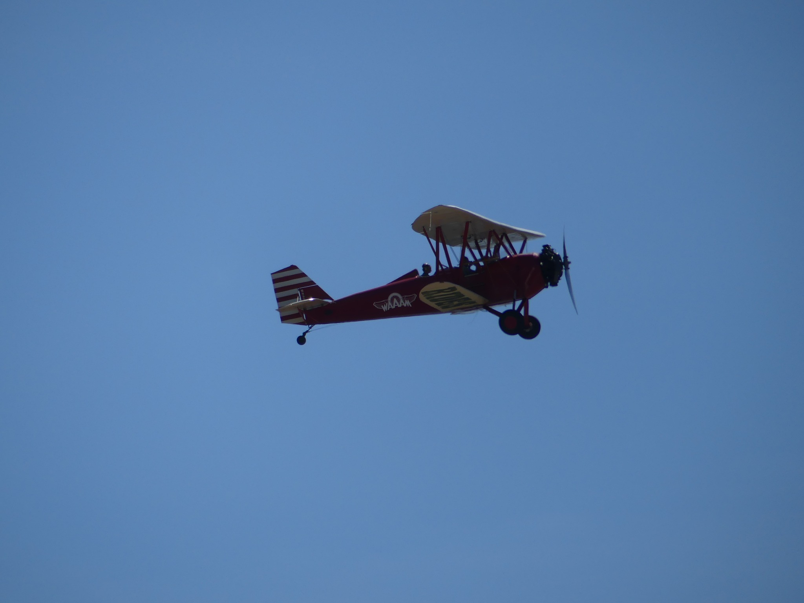All of our antique airplanes have been meticulously restored from the inside out. And, unlike the aircraft at most air museums, our aircraft still fly! Be clear on this ... it's not that they "can" fly, they DO fly. We take our aircraft out as often as we can, and we give them the workout that they want and deserve.
Most of our aircraft were flown for the purposes of personal recreation, some were used as work horses, and others were flown for military reasons.
Enjoy our list of selected airplanes of the permanent collection below.
Selected Airplane List by Year
Click a decade to travel through time: 1900's | 1920's | 1930's | 1940's | 1950's | 1960's | 1970's | 1980's
Don't see anything? Scroll up a bit and the plane information should be there!
Wright Glider Replica

Year: 1902*
Acquired with Donated Funds
Wilbur and Orville Wright were determined and meticulous experimenters and after their wind tunnel experiments of 1901 showed that the Lilienthal data on wing design was wrong they applied what they had learned to the following season’s glider experiments. On this, their third glider design, they changed the shape of the wing cross section and built the first aircraft to use three-axis (pitch, yaw and roll) control. They flew in a prone position, controlled wing warp by sliding side to side in a hip cradle and controlled the elevator by rolling a horizontal bar with their hands. The rudders were coupled to the wing warping mechanism for coordinated flight, the first time that the rudders were not fixed in one position. They made nearly 1,000 flights in September and October 1902 and as many again in September and October 1903. The Wrights abandoned their glider at Kitty Hawk in 1903 and the only remaining part of it is a single wingtip in the Smithsonian Institution collection.
*Parts for this replica were built by Jud L. Ketola over a number of years and it was completed for display by WAAAM volunteers in 2018.
1910 Curtiss Pusher

Year: 1910*
Donated by Terry Brandt
This project has been restored thanks to a generous grant from the Ludwick Family Foundation, the donation of dope and fabric from Consolidated Aircraft Coatings, and donations from museum visitors.
(* Please note that parts of this airplane date back to 1910 according to Mr. Parker's family. Upon restoration other parts of the airplane could be identified as 1912, 1914, and other areas date to the 1920s. It did not get any sort of official paperwork by what became the FAA until 1934. More confusion about the date of this airplane also is a direct result from the painted letters on the tail - the top coat had 1910 as the date but upon removal another set of paint identified the plane as 1912. There is a possibility that both dates are the result of Hollywood-style tampering for old movies.)
1916 Sopwith Scout "Pup"

Year: 1916
Acquired with funds from Bryan Reid, Sr with thanks to Larry Howard.
Engine: Le Rhone, 80 HP
The Sopwith Pup (officially “Scout”) got the “Pup” nickname from its small size compared to its predecessor, the Sopwith “1-1/2 Strutter.” It was a light, maneuverable and capable single seat fighter armed with a Vickers machine gun that was synchronized to shoot through the propeller disk. On August 2, 1916, a Pup was the first aircraft to land aboard a moving ship. By December 1917 aviation had advanced so much that the Pup was replaced, rendered obsolete for combat by more modern fighters like the Sopwith Camel and the Royal Aircraft Factory S.E.5. It continued in service behind the lines, for training, and Home Defense. This is WAAAM’s first aircraft powered by a rotary engine.
Additional Specifications:
Cruise: 85 MPH
Top Speed: 112 MPH
Empty Weight: 787 lbs
Gross Weight: 1225 lbs
Wing Span: 26'6"
Length: 19'4"
Height: 9'5"
Service Ceiling: 17,500'
Climb in 1 Minute: 750' at sea level
Approximate Number Built: 1770
1917 Curtiss JN-4D

Year: 1917
Donation: Terry Brandt
Engine: Curtiss OX-5, 90 HP
Designed by Glenn Curtiss and B. Douglas Thomas, the Curtiss JN-4D “Jenny” was the trainer of choice in both the US and England during World War I. Over 9,000 Jennys (including 2,700 JN-4D) were built by six companies and it’s estimated that 95% of American and British WWI pilots received training in the Jenny. One version of the Jenny was used by General Pershing in 1916 to pursue Pancho Villa after he’d attacked the U.S. 13th Cavalry at Camp Furlong, New Mexico. When WWI ended the Curtiss Airplane Company bought back large numbers of Jennys, refurbished them and resold them in the civilian market. Many pilots used their Army training to introduce America to flight by “barnstorming” or flying from town to town to show off with acrobatics and wingwalking and to sell rides. The first scheduled air mail flights in the USA in 1918 used Jennys.
Additional Specifications:
Cruise: 60 MPH
Top Speed: 75 MPH
Empty Weight: 1430 lbs
Gross Weight: 1920 lbs
Wing Span: 43'7.75"
Length: 27'4"
Height: 9'10.5"
Service Ceiling: 6,500'
Climb in 1 Minute: 200' at sea level
Approximate Number Built: 2,700+
1925 WACO Nine

Acquired with funds from Terry Brandt.
Engine: Curtiss OX-5, 90 HP
The WACO Nine is the eleventh airplane to be awarded a type certificate in the wake of the Air Commerce Act of 1926 which began the regulation of aviation. Designed in 1925 around the plentiful Curtiss OX-5 engine by two men with no more than high school education, the Model Nine was ruggedly built and readily met the requirements for certification. A WACO Nine flew in the 1925 Ford Air Tour and fourteen of them participated in the 1926 National Air Races. It seated the pilot plus two passengers and served in barnstorming, racing, and utility roles.
Additional Specifications:
Cruise: 79 MPH
Top Speed: 92 MPH
Empty Weight: 1320 lbs
Gross Weight: 2100 lbs
Wing Span: 31'7" / 29'4"
Length: 23'3"
Height: 9'3"
Service Ceiling: 12,000'
Climb in 1 Minute: 500' at sea level
Approximate Number Built: 267
(Data pulled from Joseph Juptner's U.S. Civil Aircraft series.)
1927 Stearman C2

Year: 1927
Acquired with funds from Terry Brandt with special thanks to Larry Tobin.
Engine: Hispano-Suiza Model E, 180 HP
This airplane was the last one built by Stearman in the Venice, California factory during his short time there before he returned to Wichita, Kansas. Its history is complex but well documented. It was built as a Model C-2 with a war surplus, water-cooled Hispano-Suiza engine. From 1960 to 1975 it was the only Stearman airplane flying with a water-cooled engine. Following a later conversion, it flew for many years as a C-3B with a 220 HP Continental R-670 radial engine. That was its configuration when it came to WAAAM and the WAAAM crew has now restored it to its original C-2 form.
1927 Swallow

Donation: Dick Pingrey
Engine: Curtiss OX-5, 90 HP
In 1919 E.M. “Matty” Laird had designed an airplane he called Swallow that, like many airplanes of the time, was little more than a “cleaned up” Jenny. After three years he sold his share of the E.M. Laird Airplane Company to his partners and returned to his hometown of Chicago. Jake Moellendick and Lloyd Stearman then teamed with Walter Beech to design a new Swallow which went to market in 1924. It was an immediate success, selling 26 airplanes in the first six months. The Swallow Company’s greatest problem was that management was always in flux. By 1927 Beech and Stearman had departed and Waverly Stearman, Lloyd’s younger brother, came in to redesign the Swallow for 1927-1928 giving it the steel tube structure that Moellendick had earlier prevented Lloyd from building. Production of the Swallow ended in 1929 after a five year run.
Additional Specifications:
Cruise: 85 MPH
Top Speed: 100 MPH
Empty Weight: 1447 lbs
Gross Weight: 2200 lbs
Wing Span: 32'8" / 32'8"
Length: 23'10"
Height: 8'11"
Service Ceiling: 12,000'
Climb in 1 Minute: 500' at sea level
Approximate Number Built: 100+
(Data pulled from Joseph Juptner's U.S. Civil Aircraft series.)
1928 Alexander Eaglerock Longwing

Acquired with funds from Bill Bremmeyer and Don Mayo.
Engine: Curtiss OX-5, 90 HP
At the age of 19 Al Mooney took a job with the fledgling Alexander Aircraft Company in Denver, CO, foregoing his acceptance to the Colorado School of Mines. Mooney's first airplane design was the Alexander Eaglerock which first flew on January 7, 1926. Mooney's design used the same wing panel size for all four panels so the lower wing span is greater than the upper by the two-foot width of the fuselage. It was dubbed the “Long Wing.” The extra wing area was valuable when operating airplanes with low power engines like the Curtiss OX-5 at high elevation airfields. It was a success from the start. It's not widely known that Charles Lindbergh had met with J. Don Alexander in December 1926 about the prospect of modifying a Long Wing for his solo attempt to cross the Atlantic by air but Alexander declined his request due to an already heavy workload.
Additional Specifications:
Cruise: 80 MPH
Top Speed: 92 MPH
Empty Weight: 1470 lbs
Gross Weight: 2230 lbs
Wing Span: 36' / 38'
Length: 24'11"
Height: 9'11"
Service Ceiling: 11,500'
Climb in 1 Minute: 485' at sea level
Approximate Number Built: 88+
(Data pulled from Joseph Juptner's U.S. Civil Aircraft series.)
1928 Boeing Model 40C

Acquired with funds from Jerry Wenger with special thanks to Addison Pemberton.
Engine: Pratt Whitney R-1340 Wasp, 525 HP
This airplane is the only airworthy Boeing 40 in the world and is the oldest Boeing airplane still flying. Originally designed in 1925 with a Liberty engine to carry only mail, it was redesigned in 1927 with a different engine and adding seats for two passengers. Beginning in July 1927 the Boeing 40 flew the Chicago-San Francisco air mail route. Cabin accommodation later increased to four passengers. This airplane was totaled in a crash in Southern Oregon in 1928 and its restoration was completed in 2008 after eight years and 18,000 man-hours. In May 2010 Addison Pemberton flew it “together” with the Boeing 787 Dreamliner. With the Model 40 and the photographer’s airplane flying at 90 knots, Dreamliner serial number 001 made three passes at 190 knots, giving the photographer about 3-7 seconds to get his shots. This Boeing 40 has gone to many events all across the US and reenacted flights along several legs of the original Contract Airmail Routes. After many years of wintering at WAAAM, this airplane was donated during WAAAM's 10 year anniversary at the 2017 Annual Hood River Fly-In.
Photo taken by Moose Peterson.
Additional Specifications:
Cruise: 105 MPH
Top Speed: 125 MPH
Empty Weight: 3522 lbs
Gross Weight: 6075 lbs
Wing Span: 44'2" / 44'2"
Length: 34'4"
Height: 11'8"
Service Ceiling: 14,500'
Climb in 1 Minute: 720' at sea level
Approximate Number Built: 77
(Data pulled from Joseph Juptner's U.S. Civil Aircraft series.)
1928 Heath Super Parasol
1928 Lincoln Page LP-3

Donation: Terry Brandt
Engine: Curtiss OX-5, 90 HP
Designed in 1928 by Ray Page and Victor Roos the LP-3 was built for mail and utility flying. The LP-3's similarity to the Swallow biplane is often noted and is probably due to Roos having worked at the Swallow Airplane Manufacturing Company before coming to Lincoln-Page. Little is known about Lincoln-Page because company records were lost or destroyed.
Additional Specifications:
Cruise: 85 MPH
Top Speed: 100 MPH
Empty Weight: 1350 lbs
Gross Weight: 2200 lbs
Wing Span: 32'8"
Length: 23'2"
Height: 8'10"
Service Ceiling: 12,000'
Climb in 1 Minute: 500' at sea level
Approximate Number Built: 80
(Data pulled from Joseph Juptner's U.S. Civil Aircraft series.)
1928 Monocoupe 70

Acquired with funds from Don Mayo, John Cheney, Ted Millar, and Ty Ross.
Engine: Velie M5, 55 HP
Built by Velie Motor Company from 1927-1929 the Monocoupe was among the first airplanes built specifically for private pilots. The Monocoupe is a Don A. Luscombe design with an enclosed cabin so one could dress for business while flying. The name “Monocoupe” stems from the marriage of monoplane (single wing) and coupe (a 2-passenger enclosed car). Monocoupe owners were almost obnoxious in their enthusiasm for it. During 1928 nearly 90% of all light airplanes built and sold in the U.S. were Monocoupes. Much of its success accrued to the Velie M-5 engine. Visibility from the cabin was excellent due to oversized windows and a skylight. Phoebe Omlie, the first woman to hold a Transport Pilot license, served ably as a goodwill ambassador for the Monocoupe airplane, flying hers in the National Air Tour and in the Women’s Air Derby of 1929. After the demise of the Velie Motor Company Monocoupe was sold.
Additional Specifications:
Cruise: 85 MPH
Top Speed: 98 MPH
Empty Weight: 795 lbs
Gross Weight: 1350 lbs
Wing Span: 32'
Length: 19'9"
Height: 6'3"
Service Ceiling: 10,500'
Climb in 1 Minute: 500' at sea level
Approximate Number Built: 370
(Data pulled from Joseph Juptner's U.S. Civil Aircraft series.)
1928 Stearman C3B

Acquired by funds from Andy and Lucia von Flowtow, Sterling and Kathleen Hanel, Phil and Judy Jensen, Peter and Joanie Lafferty,Ted Millar, and Michelle Lambert.
Engine: Wright J-5 Whirlwind, 220 HP
Introduced in 1927, the Stearman C-3 family quickly earned a reputation for performance and utility. It was excellent from the outset and became the basis for every Stearman design that followed. The 3-seat C-3B was used for mail and passenger service and it was also much used by flying schools for training transport pilots. In 1932 one C-3B toured extensively and another circumnavigated the globe. The first Stearman airplane sold at Wichita, KS was a C-3MD mail plane of which the C-3B is the sport-commercial version. The customer was Varney Airlines which, in 1934, merged with three other companies to form United Airlines.
Additional Specifications:
Cruise: 108 MPH
Top Speed: 126 MPH
Empty Weight: 1625 lbs
Gross Weight: 2650 lbs
Wing Span: 35' / 28'
Length: 24'
Height: 9'
Service Ceiling: 18,000'
Climb in 1 Minute: 1000' at sea level
Approximate Number Built: 122
(Data pulled from Joseph Juptner's U.S. Civil Aircraft series.)
1928 Travel Air 4000

Acquired with funds from Terry Brandt with special thanks to Dan Lanning.
Engine: Wright J-4-B, 200 HP
The Travel Air 4000 was introduced in early 1926, powered with a Wright Aeronautical J-4 Whirlwind radial engine and “elephant ear” ailerons. Walter Beech, flying a J-4-powered Travel Air 4000, took First Place in the 1926 Ford Air Tour. A few other famous pilots of 4000’s were Braniff Airways founder Paul Braniff, cowboy actor Ken Maynard, actor Wallace Beery and Billy Parker of Phillips Petroleum, who was also the builder of WAAAM’s Curtiss Pusher. The WAAAM Travel Air 4000 is powered by what is likely the last flying example of the Wright J-4 Whirlwind engine.
1928 WACO ATO "Taperwing"

Donation: Jerry Wenger
Engine: Wright Radial, 440 HP
Built by Advanced Aircraft in Troy, Ohio, which later became the Waco Aircraft Company, the "Taperwing" was modified from an original design with the addition of tapered wings. The taperwing was favored for its maneuverability, speed, and flashy design. Three taperwings were entered in the 1928 Transcontinental Derby from N.Y. to L.A. They finished an impressive 1st, 3rd, and 5th. The Taperwing went on to become a popular choice of stunt pilots at air shows and a consistent winner on the air race circuit. Approximately 53 were built.
Additional Specifications:
Cruise: 110 MPH
Top Speed: 140 MPH
Empty Weight: 2191 lbs
Gross Weight: 2600 lbs
Wing Span: 30'3" / 26'6"
Length: 22'6"
Height: 9'
Service Ceiling: 19,000'
Climb in 1 Minute: 1,200' at sea level
Approximate Number Built: 53
(Data pulled from Joseph Juptner's U.S. Civil Aircraft series.)
1928 WACO GXE

Donation: Terry Brandt
Engine: Curtiss OX-5, 90 HP
Built as the WACO Ten before WACO changed its model designation in 1928, the GXE was among the first of WACO's alphabet airplanes. It was an extremely adaptable and popular airplane and was used for barnstorming (aerobatics and selling rides), training and charter flying. The Ten was raced as well, and an OX-5-powered WACO Ten won its class in the 1927 New York-to-Spokane Transcontinental Air Derby. Innovations included an in-flight-adjustable horizontal stabilizer and “oleo” strut hydraulic landing gear. Several different engines were installed on the Ten during its seven-year production run.
Additional Specifications:
Cruise: 84 MPH
Top Speed: 97 MPH
Empty Weight: 1200 lbs
Gross Weight: 2025 lbs
Wing Span: 30'7" / 29'5"
Length: 23'6"
Height: 9'
Service Ceiling: 12,000'
Climb in 1 Minute: 520' at sea level
Approximate Number Built: 1,600
(Data pulled from Joseph Juptner's U.S. Civil Aircraft series.)
1929 Arrow Aircraft & Motors Sport "Pursuit"
Donation: Terry Brandt
Engine: Kinner K5, 90 HP
The Sport was a favorite with "Sunday pilots" and was successful for pilot training as well. Its side-by-side cockpit seating appealed to many owners. The novel tapered wings used a cantilever design, eliminating the need for bracing wires and struts. The lack of struts between the wings unnerved enough buyers that cosmetic N-struts were installed to give pilots confidence in the structure.
Additional Specifications:
Cruise: 82 MPH
Top Speed: 98 MPH
Empty Weight: 811 lbs
Gross Weight: 1529 lbs
Wing Span: 25'10"
Length: 19'3"
Height: 7'5"
Service Ceiling: 14,000'
Climb in 1 Minute: 680' at sea level
Approximate Number Built: 18
(Data pulled from Joseph Juptner's U.S. Civil Aircraft series with original factory installed LeBlond 60 HP engine.)
1929 Brunner Winkle Bird A (OX-5)

Acquired with funds from Don Mayo.
Engine: Curtiss OX-5, 90 HP
The Bird As were originally built with a Curtiss OX-5 engine but over the years many Bird As were later fitted with other engines for better performance and reliability. (WAAAM has two such Birds with swapped engines.) WAAAM got this Bird A back in 2016 bringing the collection of still flying OX-5 powered airplanes up to 10.
Additional Specifications:
Cruise: 88 MPH
Top Speed: 105 MPH
Empty Weight: 1315 lbs
Gross Weight: 2150 lbs
Wing Span: 34' / 25'
Length: 22'3"
Height: 8'8"
Service Ceiling: 12,500'
Climb in 1 Minute: 520' at sea level
Approximate Number Built: 85
(Data pulled from Joseph Juptner's U.S. Civil Aircraft series.)
1929 Brunner Winkle Bird A

Acquired with funds from Founding Memberships.
Engine: Continental W-670, 220 HP
The Bird A is a 3-seat airplane with two seats in the front cockpit. It is nearly a sesquiplane (literally a wing-and-a-half) with the upper being much larger than the lower. Endurance records were set in Bird A’s flown by women, Elinor Smith and “Bobbie” Trout. Charles Lindbergh liked the flight qualities of the Bird well enough to buy one for his wife Anne Morrow Lindbergh. Originally built with a Curtiss OX-5 engine, our Bird A was later fitted with a Continental radial engine for better performance and reliability.
Additional Specifications:
Cruise: 100 MPH
Top Speed: 120 MPH
Wing Span: 34' / 25"
Length: 22'3"
Height: 8'8"
Service Ceiling: 14,000'
1929 Brunner Winkle Bird CK

Acquired by funds from Ty Ross and Don Mayo.
Engine: Kinner B-5, 125 HP
WAAAM purchased the Bird CK from Arlene Beard, daughter of Melba Beard, a renowned aviatrix. Melba learned to fly in 1929 and her wedding gift from her husband, Dr. William Beard, was a Bird. This airplane is the last of a series of birds she had owned over the years.
Additional Specifications:
Cruise: 100 MPH
Top Speed: 118 MPH
Empty Weight: 1350 lbs
Gross Weight: 2335 lbs
Wing Span: 34' / 25'
Length: 23'
Height: 8'6"
Service Ceiling: 16,000'
Climb in 1 Minute: 700' at sea level
Approximate Number Built: 42
(Data pulled from Joseph Juptner's U.S. Civil Aircraft series.)
1929 Cessna AW

Donation: North Cascades Vintage Aircraft Museum
Engine: Warner Scarab, 110 HP
This project is awaiting restoration but is on the display floor at the museum for all to enjoy.
After leaving the Travel Air Company, which he had founded with Lloyd Stearman and Walter Beech, Clyde Cessna joined forces with Victor Roos to found the Cessna-Roos Aircraft Company, renamed the Cessna Aircraft Company after Roos’ departure in December 1927. Cessna’s first production model was the Model A, which was fitted with various engines over its production life. The airframe is conventional tube and fabric construction and the wing is a full cantilever design, i.e. it has no supporting struts. This design was the cause of a long delay in certification because government regulators had to be convinced that a strutless design could be strong enough for safety. There’s a famous photo of the prototype Cessna Model A with seventeen men standing on the wing. Between 1928 and 1930 Cessna built 48-50 of the four-seat Model AW, fitted with a 110 HP Warner Scarab radial engine. In 1928 Cessna test pilot Earl Rowland, flying the aerodynamically clean Model AW, won the Class A Transcontinental Air Derby.
Additional Specifications:
Cruise: 105 MPH
Top Speed: 125 MPH
Empty Weight: 1225 lbs
Gross Weight: 2260 lbs
Wing Span: 40'
Length: 24'9"
Height: 6'11"
Service Ceiling: 12,000'
Climb in 1 Minute: 620' at sea level
Approximate Number Built: 48
(Data pulled from Joseph Juptner's U.S. Civil Aircraft series.)
1929 Curtiss Robertson Robin B

Donation: Terry Brandt
Engine: Curtiss OX-5, 90 HP
Designed and first flown in 1928 by Curtiss Aircraft, this airplane was produced by the joint venture of Curtiss-Robertson in Anglum (St. Louis) Missouri. The Robin was one of the earliest airplanes to seat the pilot inside a cabin. It was also built with other engines including the 6-cylinder Curtiss Challenger radial and the 5-cylinder Wright J-6-5 radial. Many noteworthy flights were made with versions of the Robin including Red Jackson’s 400 consecutive rolls in 1929, the Key Brothers’ record endurance flight of more than 27 days in June 1935 and Douglas “Wrong Way” Corrigan’s Atlantic Ocean crossing in 1938. WAAAM's Robin is nicknamed the Blueprint Robin because it was never modified as so many of them were.
Additional Specifications:
Cruise: 84 MPH
Top Speed: 99 MPH
Empty Weight: 1489 lbs
Gross Weight: 2217 lbs
Wing Span: 41'
Length: 25'10"
Height: 7'10"
Service Ceiling: 10,200'
Climb in 1 Minute: 420' at sea level
Approximate Number Built: 750
(Data pulled from Joseph Juptner's U.S. Civil Aircraft series.)
1929 Fairchild KR-31 (Kreider-Reisner Challenger C-2)
1929 Ford 5-AT-C TriMotor
1929 General Air Planes Corp Aristocrat 102-A

Acquired with funds from Terry Brandt.
Engine: Continental W-670, 220 HP
A cabin-type monoplane, the Aristocrat was a good performing and roomy (for three) general purpose airplane aimed at private and business owners. The fuselage had an airfoil profile that was designed to provide lift while, incidentally, increasing passenger headroom. From the pilot’s perspective the Aristocrat was not a fussy airplane. It exhibited good air and ground maneuverability. An early Aristocrat was donated to Commodore Byrd for an Antarctic expedition and General Tire and Rubber took eight Aristocrats on a nationwide tour to demonstrate the reliability of air travel and of their products. WAAAM pilots who have flown her report that she flies very nicely.
Additional Specifications:
Cruise: 90 MPH
Top Speed: 109 MPH
Empty Weight: 1327 lbs
Gross Weight: 2110 lbs
Wing Span: 36'4"
Length: 25'4"
Height: 7'7"
Service Ceiling: 14,370'
Climb in 1 Minute: 647' at sea level
Approximate Number Built: 20
(Data pulled from Joseph Juptner's U.S. Civil Aircraft series for the factory installed Warner Super Scarab, 110 HP.)
1929 Great Lakes 2T-1AK

Donation: Bradley Ball
Engine: Kinner R-55, 160 HP
Long considered one of the best acrobatic airplanes ever produced by the American aircraft industry, the two-seat Great Lakes was designed as a trainer. It originally came with a 90 HP Cirrus inline engine. Warner radial, Menasco and Ranger engines soon replaced the Cirrus. The cockpit is roomy compared to its competitors. The Great Lakes is fun to fly and its landing characteristics are excellent. With Tex Rankin at the controls a Great Lakes holds the current world record for consecutive outside loops: 131! It was a very successful airplane with approximately 450 built from 1929 to 1936 when the Great Lakes Aircraft Company closed up shop due to the Great Depression. In the 1960’s the design was resurrected as a plans-built airplane. The rights were sold to Douglas Champlin who manufactured it from 1973 to 1984. In 2011 the Waco Classic Company announced resumption of Great Lakes production with two models, Touring and Sport.
1929 Inland S-300 Sport
1929 Mono Aircraft Monocoach
1929 Saint Louis Cardinal C-2

Acquired with funds from Don Mayo and Peter Lafferty.
Engine: LeBlond 7D, 90 HP
Patterned after the very successful Monocoupe, the St. Louis Cardinal C2 was built by the aviation subsidiary of the St. Louis Car Company whose main business was building trolley cars. The Cardinal was built with an unusual one-piece wing and front windows that are reminiscent of the Curtiss Robin of the same era, which was built nearby in Anglum, MO. As with many airplanes, it was built with progressively larger engines over its production run. Sales, however, were slow due to entrenched competition and the onset of the Great Depression.
Additional Specifications:
Cruise: 107 MPH
Top Speed: 125 MPH
Empty Weight: 1055 lbs
Gross Weight: 1450 lbs
Wing Span: 32'4"
Length: 20'7"
Height: 7'
Service Ceiling: 15,000'
Climb in 1 Minute: 1100' at sea level
Approximate Number Built: 22
(Data pulled from Joseph Juptner's U.S. Civil Aircraft series.)
1929 Stearman M-2 Speedmail
Acquired by funds from Terry Brandt with special thanks to Alan Lopez.
Engine: Pratt Whitney R-1690 Hornet, 525 HP
Our “Bull Stearman” was so-nicknamed for its imposing physical size and extreme loudness compared to contemporary airplanes. It is the largest airplane built by Stearman. This was one of the six M-2’s bought by Varney Airlines for use on the Portland-Seattle-Spokane Contract Air Mail Route 32. One M-2 was built for a private owner and used a Pratt & Whitney Hornet engine. Its 46-foot wingspan is the longest in the WAAAM collection, exceeding even the Boeing Model 40C. The M-2 was built to carry a pilot plus 1,000 lbs. of mail. Stearman’s selection of the troublesome Wright R-1750 Cyclone engine contributed to the airplane’s downfall. Varney lost three of its six M-2’s in their first year. Future Varney orders went to Boeing for their Model 40 and no other operators ordered M-2 Speedmails. United Airlines (of which Varney was a component) sold NC9055 in 1932. This airplane was enroute to Alaska in October 1939 when it landed at the shore of Teslin Lake, Yukon Territory and turned upside down. It lay in the water until it was retrieved in 1989. Restorer Alan Lopez wrote a book (available in the museum gift shop) about the history and restoration of this airplane.
1929 WACO CSO

Donation: Mike and Linda Strong
Engine: Wright J-6-7, 225 HP
The WACO CSO was principally a general upgrade to the WACO 10 design with more durable landing gear and using a Wright Whirlwind engine. Most other changes were not apparent from outside the fabric covering. In the early 1930’s the Brazilian military flew air mail using CSO’s due to their having longer range than the other aircraft available.
Additional Specifications:
Cruise: 108 MPH
Top Speed: 128 MPH
Empty Weight: 1628 lbs
Gross Weight: 2600 lbs
Wing Span: 30'7" / 29'5"
Length: 22'6"
Height: 9'2"
Service Ceiling: 19,000'
Climb in 1 Minute: 1,100' at sea level
Approximate Number Built: 17-ish
(Data pulled from Joseph Juptner's U.S. Civil Aircraft series.)
1929 Wallace B-330 Turoplane
1920's-30's Alfaro Primary Glider PTG-2

Donation: Brian Coughlin
Heraclio Alfaro-Fournier built and flew the first airplane in Spain in 1914 for which he was knighted by King Alfonso XIII. Alfaro designed and flew airplanes throughout his life, many of them while he lived in the U.S. His best known airplane is a modification, for the 1927 Dole Trophy Race, of the Air King biplane “City of Peoria”. Alfaro was an instructor at the Massachusetts Institute of Technology (MIT) for a time and around 1938 developed an axial engine that was produced by the Hendee Manufacturing Company, maker of Indian motorcycles. Little information is available on the Alfaro PTG-2 Primary Glider except that at least five are known to have been registered in the U.S. around 1930. It is likely that the WAAAM PTG-2 is the only one remaining.
1930's Schleicher Rhonbussard Model 35 Glider

Acquired with funds from Jerry Wenger.
The Rhönbussard, designed in 1933 by Hans Jacobs for glider manufacturer Alexander Schleicher GmbH, is the little brother of his Rhönädler design of the previous year. For simplicity and reduced cost, the Rhönbussard has no spoilers, air brakes or flaps. The ailerons are pushrod operated. The glider uses a wheeled dolly for takeoff which the pilot jettisons when it leaves the ground. The landing gear is a main skid and a tail skid, typical for the time. It was considered an intermediate performance glider and flights of 200-300 km were flown in it.
This project on display will be restored when given enough time and funding.
1930 Davis D-1-K

Donation: Terry Brandt
Engine: Kinner K-5, 100 HP
The Davis Monoplane Company of Richmond, Indiana built a total of about sixty airplanes in its short life, of which eleven were D-1-K. The Davis evolved from the Vulcan American Moth after Walter Davis bought and reorganized the Vulcan Aircraft Company. This airplane was flown in the movie The Tarnished Angels. It also has the distinction of having the oldest Kinner engine still flying.
Additional Specifications:
Cruise: 105 MPH
Top Speed: 127 MPH
Empty Weight: 925 lbs
Gross Weight: 1461 lbs
Wing Span: 30'2"
Length: 20'4"
Height: 7'3"
Service Ceiling: 14,000'
Climb in 1 Minute: 1050' at sea level
Approximate Number Built: 11
(Data pulled from Joseph Juptner's U.S. Civil Aircraft series.)
1930 Fleet Model 7

Donation: Terry Brandt
Engine: Warner Scarab, 175 HP
Designed by Reuben H. Fleet of Consolidated Aircraft, the Model 7 is a variant of the brawny Fleet Model 2. Its first flight was in 1928 and three models were built, the 7, the 7-C and the 7 Deluxe. The 7 was the basic land- or sea-plane, the 7-C added a “coupe-top” canopy and the Deluxe offered increased range with a fuel capacity twice that of the basic model. Including all models, several hundred were built. The Model 7 was considered sassy rather than docile and it quickly gave a fledgling pilot the sense that he would soon become a hot rod pilot. It was an exceptionally maneuverable and pleasant flyer.
Additional Specifications:
Cruise: 110 MPH
Top Speed: 165 MPH
Empty Weight: 1263 lbs
Gross Weight: 1740 lbs
Wing Span: 28'
Length: 21'6"
Height: 8'
Service Ceiling: 17,000'
Climb in 1 Minute: 740' at sea level
Approximate Number Built: 30
1930 Laird LC-1B-300

Acquired with funds from Terry Brandt with special thanks to Larry Howard.
Engine: Wright J-6-9, 300 HP
The Laird Commercial LC-1B-300 is an open cockpit biplane with three seats and a 300 HP Wright J-6-9 (R-975) engine. Laird Commercial airplanes were hand built and advertised as “Thoroughbreds of the Air.” The airframe construction is extraordinarily unusual in that it is a combination of steel “clusters” with aluminum tubing. The high price of hand work kept Laird’s production numbers low and today flying examples are particularly rare. Just four of the LC-1B-300 were built and only this one remains. The paint scheme is what it had as an official airplane of the 1931 Ford National Air Tour. In its life it has served in many capacities: it was the sixth company airplane of the Berry Brothers aircraft paint company, it towed banners, it was a skywriter, it worked as a crop duster and an agricultural spray plane, it flew coastal patrol and towed targets during WWII. It sat derelict in Southern California for over 25 years before being a restoration project for nearly 25 more. It was completed in 2008 and enjoyed traveling to many events including WAAAM's own Annual Hood River Fly-In several times before being donated in 2017.
1930 Lincoln PT-K

Donation: Rick Martin
Engine: Kinner K-5, 100 HP
The Lincoln PT-K is one of many airplanes designed in the 1920s to replace the surplus WWI airplanes that were then common for flight training. For its time the airplane was well designed with its long, narrow fuselage furnishing student pilots flight controls that were forgiving, not touchy, helping them learn. It has two seats and four (!) throttle controls. At that time it was undecided whether pilots should hold the stick in the right hand and operate throttle with the left or vice versa so Lincoln gave them freedom of choice. An option that Lincoln offered was the Bloxham “Safe-T-Stick” that would allow an instructor to disengage the student’s control stick if the student panicked or froze on the controls. A few later PT-K were equipped with a canopy for weather protection.
Additional Specifications:
Cruise: 85 MPH
Top Speed: 104 MPH
Empty Weight: 1176 lbs
Gross Weight: 1767 lbs
Wing Span: 32'3" / 31'9"
Length: 25'7"
Height: 9'
Service Ceiling: 13,500'
Climb in 1 Minute: 800' at sea level
Approximate Number Built: 18
(Data pulled from Joseph Juptner's U.S. Civil Aircraft series.)
1930 Long Henderson Longster III

Donation: Terry Brandt
Engine: Henderson In-line Four, 23 HP
The single seat, parasol winged Longster was designed by Les Long of Cornelius, Oregon who is called the Father of Homebuilt Airplanes. The plans were published in Popular Mechanics magazine. The Henderson Longster is powered by a 4-cylinder Henderson motorcycle engine.
This Henderson was homebuilt by Fletcher.
1930 New-Standard-D25
Acquired with funds from Jerry Wenger.
Engine: Wright R-760, 235 HP
The New Standard D-25 was purpose built for barnstorming and “hopping” rides. A barnstormer’s dream, the D-25 was a star of the early airshows. The 45-foot wingspan made it an imposing airplane both close up and at a distance. It performed acrobatics slowly and gracefully, ably carried wing walkers and its front cockpit accommodated four passengers for joyrides. From a pilot’s perspective, the aileron control was quite stiff but the rudder kept things in proper order. The rugged design let it stand up to its barnstorming, agricultural flying and mail carrying missions.
1930 Stearman 6L Cloudboy

Acquired with funds from Terry Brandt.
Engine: Lycoming R-680, 225 HP
It was designed to be a light, low cost, entry level biplane that was built with an eye toward future military uses. It initially mounted a 165 HP Wright J-6-5 (R-540) but was capable of using engines up to 300 HP. The Cloudboy built for the Army was designated YPT-9. The WAAAM airplane was built as a 6F with a 170 HP Continental A70 engine and was later converted to a 6L with a 200 HP Lycoming R-680. The paint is that of the Army YPT-9B. Few Cloudboys were built but they kept the company operating until production of Kaydets began in preparation for WWII.
Additional Specifications:
Cruise: 100 MPH
Top Speed: 120 MPH
Empty Weight: 1880 lbs
Gross Weight: 2551 lbs
Wing Span: 32' / 28'
Length: 23'8"
Height: 9'7"
Service Ceiling: 15,000'
Climb in 1 Minute: 875' at sea level
Approximate Number Built: 10
(Data pulled from Joseph Juptner's U.S. Civil Aircraft series.)
1930 WACO INF

Donation: North Cascades Vintage Aircraft Museum
Engine: Kinner B-5, 125 HP
Waco designed the F series to replace the earlier O series airframe. The F was lighter by more than 400 lbs. and smaller but it still accommodated three people in its two cockpits and performed as well as its predecessor with smaller, more economical engines. The INF was intended to be a sport airplane and it features Waco’s high quality construction and excellent flying characteristics.
Additional Specifications:
Cruise: 100 MPH
Top Speed: 118 MPH
Empty Weight: 1156 lbs
Gross Weight: 1896 lbs
Wing Span: 29'6"/ 27'5"
Length: 20'8"
Height: 8'4"
Service Ceiling: 16,000'
Climb in 1 Minute: 800' at sea level
Approximate Number Built: 50
(Data pulled from Joseph Juptner's U.S. Civil Aircraft series.)
1930 WACO Primary Glider
Donation: Terry Brandt
Charles Lindbergh’s Trans-Atlantic flight of 1927 fanned interest in aviation across the U.S.A. The cheapest way to participate was with a primary glider which saw great popularity in the late 1920’s in Europe. After WWI Germany was not permitted to build and fly powered aircraft so they took a particular interest in gliders. Primary gliders are minimal aircraft, little more than a seat on a wood or steel tube truss with a wing and tail feathers attached. They were most often launched from a hilltop by several men pulling on shock cords (bungees). WACO and Cessna were among the U.S. builders of these birds. Primary gliders were successful as trainers in Europe but were less successful in the U.S. where Europe’s discipline in primary glider training was absent. The U.S. accident rate far exceeded that of Europe and the Air Bureau stepped in to stanch the bloodshed. The WAAAM WACO Primary Glider, a WACO-built original, was restored by museum volunteers in 2014.
Additional Specifications:
Glide Ration: 15:1
Empty Weight: 225 lbs
Gross Weight: 450 lbs
Wing Span: 36'
Length: 21'
Height: 10'
Approximate Number Built: 300-ish
1931 Aeronca C-3 on floats

Donation: Terry Brandt
Engine: Aeronca E-113, 36 HP
Introduced in 1931, the two-seat Aeronca C-3 was an evolution of the single-seat C-2. The C-3 has a 36 HP (later 40 HP) two-cylinder engine. A factory demonstrator was flown on a 13,000 mile, 17-state tour showing off its practicality. Often described as a powered glider, the C-3 was a hit with flying schools and private owners due to its low cost of operation. It is a gentle flyer and early owners often flew solo with as little as five hours of instruction. The shape of the fuselage of the C-2 and C-3 invoked its nickname The Flying Bathtub and the triangle-shaped upper fuselage suggested “razor-back.” Production ran from 1931 to 1937.
1931 American Eagle B-31 Eaglet

Donation: Terry Brandt
Engine: Szekley SR-3, 45 HP
Designed by American Eagle as Everyman's Airplane, this two-seat airplane was conventionally-built with a steel tube fuselage and wood wings. It didn’t have the look of a “flivver-plane,” even though that’s what it was. It was tall enough to be easy to get in and out of which was a real plus for airplanes of its type. While it could cruise at 75 MPH, it landed at a sedate 25 MPH. The production rights passed through a number of owners over the years and a modernized version of the Eaglet was built during the 1960’s.
Additional Specifications:
Cruise: 75 MPH
Top Speed: 90 MPH
Empty Weight: 500 lbs
Gross Weight: 922 lbs
Wing Span: 34'4"
Length: 21'7"
Height: 8'4"
Service Ceiling: 14,500'
Climb in 1 Minute: 700' at sea level
Approximate Number Built: 9
(Data pulled from Joseph Juptner's U.S. Civil Aircraft series.)
1931 Buhl LA-1 Bull Pup
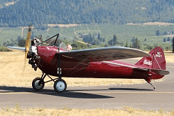Donation: Terry Brandt
Engine: Szekley SR-3, 45 HP
The long-established Buhl Stamping Company of Detroit, Michigan expanded into aviation in 1925. After the stock market crash of 1929 sales of Buhl's well-regarded Airsedan abruptly dried up and they designed this small sport airplane to keep the company afloat through hard times. Sales of the single-seat, shoulder-winged Bull Pup, introduced in 1930, was not enough to keep Buhl Aircraft solvent and it folded in 1933. The Bull Pup was sold with the options of shorter wings for competition, longer wings for high altitude flying and floats. Ours has a rudimentary airspeed indicator atop the right wing.
Additional Specifications:
Cruise: 80 MPH
Top Speed: 95 MPH
Empty Weight: 550 lbs
Gross Weight: 842 lbs
Wing Span: 30'
Length: 19'
Height: 6'6"
Service Ceiling: 14,000'
Climb in 1 Minute: 800' at sea level
Approximate Number Built: 100
(Data pulled from Joseph Juptner's U.S. Civil Aircraft series.)
1931 Curtiss Wright CW-1 Junior

Donation: Terry Brandt
Engine: Szekley SR-3, 45 HP
During 1930-1931 the C-W Junior, along with the Aeronca C-3 and the American Eaglet, probably provided more flying pleasure and priceless experience for the private owner-pilot than any other airplane. Evolved from the Snyder Buzzard and a prototype, the Skeeter, the Junior was just about the most popular flivver plane of its time. It was widely used by hunters and photographers due to its nearly unrestricted front seat. The deepening economic depression quashed sales. Production lasted only 1930-1932.
Additional Specifications:
Cruise: 70 MPH
Top Speed: 80 MPH
Empty Weight: 555 lbs
Gross Weight: 975 lbs
Wing Span: 39'6"
Length: 21'3"
Height: 7'4"
Service Ceiling: 12,000'
Climb in 1 Minute: 580' at sea level
Approximate Number Built: 270
(Data pulled from Joseph Juptner's U.S. Civil Aircraft series.)
1931 Curtiss Wright Travel Air 12-W

Donation: Terry Brandt
Engine: Kinner R-55, 165 HP
The C-W Model 12 was built as a 2-seat sport/trainer airplane. Three different engines were offered by the factory. Originally built with a fully-cowled Warner Scarab engine of 110 HP, our airplane later had a 125 HP Kinner installed. It was maneuverable and robust which made it eligible for use as an acrobatic trainer in the secondary stage of the Civilian Pilot Training Program. Had its price been competitive for the times, no doubt many more would have been sold. Our airplane was owned for several years by Melba Beard (for more on Melba Beard see the 1929 Brunner Winkle Bird CK).
Additional Specifications:
Cruise: 100 MPH
Top Speed: 130 MPH
Empty Weight: 1186 lbs
Gross Weight: 1800 lbs
Wing Span: 28'10" / 26'4"
Length: 20'10"
Height: 8'10"
Service Ceiling: 15,000'
Climb in 1 Minute: 600' at sea level
Approximate Number Built: 12
(Data pulled from Joseph Juptner's U.S. Civil Aircraft series.)
1931 Franklin Sport 90

Donation: Terry Brandt
Engine: Lambert R-266, 90 HP
Variously described as “buxom” or “pot-bellied,” the Franklin Sport 90 was introduced into a failing economy. Built as a sport plane it had to be flown with a firm hand at all times. Little is known about the Franklin Aircraft Company because it failed in 1932 and the company’s records were ordered destroyed in 1942. Franklin built only 16 airplanes in its short life, eight with Lambert 60 HP engines and six with 90 HP engines.
Additional Specifications:
Cruise: 95 MPH
Top Speed: 115 MPH
Empty Weight: 885 lbs
Gross Weight: 1424 lbs
Wing Span: 26' / 24'
Length: 19'6"
Height: 7'9"
Service Ceiling: 10,000'
Climb in 1 Minute: 900' at sea level
Approximate Number Built: 6
(Data pulled from Joseph Juptner's U.S. Civil Aircraft series.)
1931 Spartan C2-60

Donation: Terry Brandt
Engine: Jacobs L-3, 55 HP
Founded in 1928 by Tulsa oil man William Skelly, Spartan comprised two businesses: airplane manufacture and an aeronautical college. Spartan survived the Great Depression partly by using its students to build the sport-trainer C2-60 after sales of its larger planes dried up. The C2-60 is a two-seat (side-by-side) airplane with a 55 HP engine. Its long wing and short landing gear give the impression of a racer but it was not. It was pretty much a powered glider, well-behaved and nimble in flight but restricted from aerobatics. Flying schools trained with them and owner-pilots used them for sport.
Additional Specifications:
Cruise: 81 MPH
Top Speed: 93 MPH
Empty Weight: 731 lbs
Gross Weight: 1195 lbs
Wing Span: 40'
Length: 22'5"
Height: 6'11"
Service Ceiling: 13,000'
Climb in 1 Minute: 750' at sea level
Approximate Number Built: 16
(Data pulled from Joseph Juptner's U.S. Civil Aircraft series.)
1931 Stearman 4D Jr. Speedmail

Acquired by funds from Jerry Wenger.
Engine: Pratt Whitney R-985 Wasp Jr., 450 HP
At the start of the Great Depression Lloyd C. Stearman saw a need for better and larger airplanes to carry mail. He designed the Model 4 as a scaled down M-2 and 40 were built (all variants) before production ended in 1931. All airframes were identical except for the front cockpit, engine options and a change to the tail in late production. The Juniors were configured with a two-seat front cockpit while the Seniors had mail pits. Speedmails served American, Varney and Western Air Lines on their contract air mail routes. The previous owner of this Jr. Speedmail delivered it to WAAAM, flying it here from his home in Florida. Lloyd Stearman has been quoted numerous times as having said, “It was the finest airplane I ever built” and pilots who have flown the Model 4 agree.
Additional Specifications:
Cruise: 120 MPH
Top Speed: 145 MPH
Empty Weight: 2297 lbs
Gross Weight: 3800 lbs
Wing Span: 38' / 28'
Length: 26'11"
Height: 10'2"
Service Ceiling: 15,000'
Climb in 1 Minute: 1050' at sea level
Approximate Number Built: 16
(Data pulled from Joseph Juptner's U.S. Civil Aircraft series.)
1931 Stinson W

Donation: Hilary Peck in memory of Ron Peck
Engine: Pratt Whitney R-985 Wasp Jr., 300 HP
Built in 1931-1932, the Stinson Model W, substantially similar to and often mistaken for the Stinson SM-7B, was not a standout in the Stinson "Junior" line except as a roomy, comfortable, high-performance cabin airplane. Three of the four seats could easily be removed to make room for cargo. While it was less well known than its siblings, it may have been the best of them. Its useful load rating left plenty of room for extras that would have reduced the utility of most airplanes. The Model W was aimed at sportsmen-pilots, well-to-do family men and business executives.
Additional Specifications:
Cruise: 122 MPH
Top Speed: 143 MPH
Empty Weight: 2379 lbs
Gross Weight: 3650 lbs
Wing Span: 42'1"
Length: 30'10"
Height: 8'11"
Service Ceiling: 18,000'
Climb in 1 Minute: 950' at sea level
Approximate Number Built: 5
(Data pulled from Joseph Juptner's U.S. Civil Aircraft series.)
1931 Taylor E-2 Cub

Donation: Terry Brandt
Engine: Continental A-40, 37 HP
The first Cub was the Taylor Model E-2, a two-seat trainer with the newly-introduced 40 HP Continental flat-four engine. The E-2 was not a rousing success out of the gate but as E-2’s found homes across the country and pilots gained experience the word got around and people lined up to fly. It was designed by C.G. Taylor with a goal of building a well-behaved airplane for sport and training. Taylor’s advertisement declared it “America’s Safe Airplane.” This one is the seventh production airframe built and was restored in 2007-2008. Its first flight post-restoration was on May 15, 2008.
Additional Specifications:
Cruise: 65 MPH
Top Speed: 78 MPH
Empty Weight: 525 lbs
Gross Weight: 925 lbs
Wing Span: 35'3"
Length: 22'3"
Height: 6'6"
Service Ceiling: 12,000'
Climb in 1 Minute: 450' at sea level
Approximate Number Built: 350
(Data pulled from Joseph Juptner's U.S. Civil Aircraft series.)
1931 WACO RNF

Donation: Terry Brandt
Engine: Warner Scarab, 125 HP
WACO had learned that horsepower was an expensive way to quicken the pulse of sport pilots. The Model F had lines reminiscent of past WACO designs but in a smaller airframe. It was designed to give performance comparable to that of larger, more powerful airplanes while using an engine that was far less costly. Stable and easy to fly, the RNF was exceptionally capable and in the hands of a good pilot could be safely landed in the confines of a 100-foot circle. As the word spread sales flew as well as the airplane. WACO had hit the jackpot.
Additional Specifications:
Cruise: 95 MPH
Top Speed: 112 MPH
Empty Weight: 1150 lbs
Gross Weight: 1897 lbs
Wing Span: 29'6" / 27'5"
Length: 20'8"
Height: 8'4"
Service Ceiling: 15,000'
Climb in 1 Minute: 730' at sea level
Approximate Number Built: 150+
(Data pulled from Joseph Juptner's U.S. Civil Aircraft series.)
1932 Aeronca C-3

Donation: Terry Brandt
Engine: Aeronca E-113, 36 HP
Introduced in 1931, the two-seat Aeronca C-3 was an evolution of the single-seat C-2. The C-3 has a 36 HP (later 40 HP) two-cylinder engine. A factory demonstrator was flown on a 13,000 mile, 17-state tour showing off its practicality. Often described as a powered glider, the C-3 was a hit with flying schools and private owners due to its low cost of operation. It is a gentle flyer and early owners often flew solo with as little as five hours of instruction. The shape of the fuselage of the C-2 and C-3 invoked its nickname The Flying Bathtub and the triangle-shaped upper fuselage suggested “razor-back.” Production ran from 1931 to 1937.
Additional Specifications:
Cruise: 63 MPH
Top Speed: 80 MPH
Empty Weight: 466 lbs
Gross Weight: 875 lbs
Wing Span: 36'
Length: 20'
Height: 7'6"
Service Ceiling: 14,000'
Climb in 1 Minute: 500' at sea level
Approximate Number Built: 400+
(Data pulled from Joseph Juptner's U.S. Civil Aircraft series.)
1932 Fairchild 22-C7B

Donation: Terry Brandt
Engine: Menasco Pirate, 125 HP
The Fairchild 22 was built during the early 30's by the Fairchild Aircraft Company's Kreider-Reisner division. A successful trainer and sport plane, the 22 was sold with several engine choices. Both our 22’s have inverted inline engines but other engines, including radials, were offered in other models. The 22 was a lively performer and flying schools used them to teach pilots advanced maneuvers and piloting techniques. Production lasted from 1931 to 1935.
Additional Specifications:
Cruise: 106 MPH
Top Speed: 125 MPH
Empty Weight: 1010 lbs
Gross Weight: 1600 lbs
Wing Span: 31'10"
Length: 21'11"
Height: 8'
Service Ceiling: 18,000'
Climb in 1 Minute: 1050' at sea level
Approximate Number Built: 8
(Data pulled from Joseph Juptner's U.S. Civil Aircraft series.)
1932 Pietenpol Sky Scout

Donation: Terry Brandt
Engine: Ford Model B, 40 HP
Bernard Pietenpol of Cherry Grove Minnesota designed a simple airplane using a Ford Model A engine. A Modern Mechanics magazine editor had declared that it was “unlikely that any auto engine could be converted to airplane use” so Pietenpol flew his home built, two-seat airplane 140 miles to Minneapolis Airport to show that he was wrong. Soon afterward the magazine published plans for that airplane, the Air Camper, and later published plans for its single-seat offspring, the Sky Scout. Both were intended to be built by amateurs using cheap, readily available engines from the Ford Model T and Model A. The Pietenpol airplanes were so well designed that they are still being built today. The radiator position is not the obstacle it seems. Few hazards in flight come from directly ahead and tilting the head to either side reveals what the radiator hides.
This Pietenpol was homebuilt by Wille.
Additional Specifications:
Cruise: 80 MPH
Top Speed: 90 MPH
Empty Weight: 570 lbs
Gross Weight: 1050 lbs
Wing Span: 27'3"
Length: 16'3"
Height: 8'5"
Service Ceiling: 10,000'
Climb in 1 Minute: 200' at sea level
Approximate Number Built: 100+
1932 WACO UBA
Donation: Jerry & Sonja Wenger
Engine: Continental R-670, 220 HP
The 2-seat, side-by-side UBA was the top of the line in the A series. The goal of the A series was low cost, high performance flying. The fuselage design is a modification of the cabin WACO. The $4,895 price was still truly high during the Great Depression and production ended at just six airplanes. Three UBA survive on the FAA registry and this is the only one known to be flying. Upon its donation WAAAM’s Chief Pilot, along with his wife, flew the airplane from Kalamazoo, MI to WAAAM in Hood River, OR.
Additional Specifications:
Cruise: 115 MPH
Top Speed: 132 MPH
Empty Weight: 1409 lbs
Gross Weight: 2250 lbs
Wing Span: 29'6" / 27'5"
Length: 21'
Height: 8'9"
Service Ceiling: 15,800'
Climb in 1 Minute: 1500' at sea level
Approximate Number Built: 6
(Data pulled from Joseph Juptner's U.S. Civil Aircraft series.)
1932 WACO UBF-2
Donation: Jerry Wenger
Engine: Continental "W" -670-N, 220 HP
Developed from earlier WACO models, the "new" UBF was a 3-place, open cockpit, all-purpose biplane. One of the few models to actually be named by the Waco Aircraft Company at Troy, Ohio, the UBF was known as "The Tourist." During 1932-1933, at least 11 aircraft were built. Considered a high performance utility airplane, it quickly became a favorite of businessmen, flying services, and sportsman pilots.
Additional Specifications:
Cruise: 116 MPH
Top Speed: 132 MPH
Empty Weight: 1380 lbs
Gross Weight: 2300 lbs
Wing Span: 29'6" / 27'5"
Length: 20'9"
Height: 8'9"
Service Ceiling: 15,800'
Climb in 1 Minute: 1500' at sea level
Approximate Number Built: 18
(Data pulled from Joseph Juptner's U.S. Civil Aircraft series.)
1933 Fairchild 22-C7A

Acquired with funds from Founding Memberships
Engine: Cirrus High Drive, 95 HP
The Fairchild 22 was built during the early 30's by the Fairchild Aircraft Company's Kreider-Reisner division. A successful trainer and sport plane, the 22 was sold with several engine choices. Both our 22’s have inverted inline engines but other engines, including radials, were offered in other models. The 22 was a lively performer and flying schools used them to teach pilots advanced maneuvers and piloting techniques. Production lasted from 1931 to 1935.
Additional Specifications:
Cruise: 94 MPH
Top Speed: 114 MPH
Empty Weight: 926 lbs
Gross Weight: 1550 lbs
Wing Span: 32'10"
Length: 21'8"
Height: 8'
Service Ceiling: 13,000'
Climb in 1 Minute: 750' at sea level
Approximate Number Built: 58
(Data pulled from Joseph Juptner's U.S. Civil Aircraft series.)
1933 Stearman Model 70
Donation: Terry Brandt
Engine: Lycoming R-680, 215 HP
This one-and-only airplane is the prototype of the Stearman Model 75 “Kaydet” biplane, an icon of aviation. The Model 70 was a blend of the Boeing 203 and the Stearman Model 6 Cloudboy and took just 60 days from idea to first flight. The Model 70 design was so refined that the Army considered its stall too gentle for a military trainer so the upper wing was modified for the desired performance and the change applied to all production Kaydets. Over 10,000 Kaydets (Navy N2S, Army PT-13, -17, -18, RCAF PT-27) were built.
Additional Specifications:
Cruise: 103 MPH
Top Speed: 124 MPH
Empty Weight: 1997 lbs
Gross Weight: 2686 lbs
Wing Span: 32'2" / 31'2"
Length: 24'10"
Height: 9'4"
Service Ceiling: 13,200'
Climb in 1 Minute: 825' at sea level
Approximate Number Built: 1
(Data pulled from Joseph Juptner's U.S. Civil Aircraft series.)
1933 WACO UIC
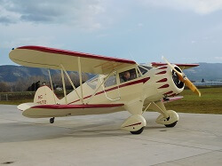Acquired with funds from Terry Brandt.
Engine: Continental R-670, 220 HP
The WACO UIC is a 4-seat cabin biplane. The cabin was luxuriously appointed with upholstery, full flight and engine instruments, automobile type doors on both sides, individual front seats, and a roomy bench seat for two in the rear. It was conventionally built with a steel tube and fabric fuselage and a wood and fabric wing. Ailerons were provided on both upper and lower wings. With its good flight characteristics and moderate performance, the cabin WACO was popular with famous names like Jacqueline Cochran and Henry DuPont as a corporate aircraft. WAAAM's WACO UIC was flown to the museum in 2015 and was refurbished in 2018.
Additional Specifications:
Cruise: 135 MPH
Top Speed: 140 MPH
Empty Weight: 1690 lbs
Gross Weight: 2800 lbs
Wing Span: 33'3" / 28'3"
Length: 25'2"
Height: 8'6"
Service Ceiling: 14,400'
Climb in 1 Minute: 900' at sea level
Approximate Number Built: 83
(Data pulled from Joseph Juptner's U.S. Civil Aircraft series.)
1935 Franklin PS-2 Glider

Acquired with funds from Don Mayo.
The Franklin PS-2 glider first flew in 1931. It was designed by R.E. Franklin, a Professor of Mechanical Engineering at University of Michigan who built it as an improvement over the German designs then in use. The wing is braced with struts rather than with multiple wires as was then common practice. Assembly and disassembly is much easier with struts than with wires. In 1933 Stan Smith won the National Soaring Championship in a Franklin PS-2. In 1934 three PS-2s were used in a trial of the Lustig Skytrain, a multi-glider towing arrangement intended for delivery of goods and mail. Departing New York, the three gliders were towed in a line then released in sequence over their respective destinations of Philadelphia, Baltimore and Washington, D.C. Also in 1934, the U.S. Navy procured six PS-2s for training though these saw little use. WAAAM's PS-2 is sporting the Navy PS-2 colors. In 1938 one of the Navy PS-2s was transferred to NACA (forerunner of NASA) where it was used for ground effect research by towing a PS-2 behind a specially designed automobile. The WAAAM PS-2 was owned and flown by the University of Michigan Glider Club until 1943.
Additional Specifications:
Glide Ration: 15:1
Empty Weight: 220 lbs
Gross Weight: 400 lbs
Wing Span: 36'
Length: 17'6"
Height: 6'10"
Approximate Number Built: 54
1935 WACO YPF-6
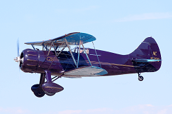Donation: Jerry Wenger
Engine: Jacobs R-755, 275 HP
This is the only remaining WACO YPF in existence. The WACO YPF-6 introduced the "Coupe Top" canopy and was the last WACO model to feature the "bump" cowl. The WAAAM YPF was custom built for Miss Connie E. Johnson and was fitted with the most deluxe equipment available at the time. She specified all the equipment and the color scheme, including the gold trim that incorporated her initials as design elements. She also specified that no company logo appear on the exterior. Miss Johnston sold the airplane following an engine fire. It was repaired and during WWII it served as a secondary phase trainer in the Civilian Pilot Training Program. The canopy was blacked out for instrument training with the instructor flying in the front cockpit.
Specifications:
Cruise: 135 MPH
Top Speed: 150 MPH
Empty Weight: 1675 lbs
Gross Weight: 2650 lbs
Wing Span: 30' / 29'10"
Length: 23'4"
Height: 8'5"
Service Ceiling: 17,500'
Climb in 1 Minute: 1100' at sea level
Approximate Number Built: 2
(Data pulled from Joseph Juptner's U.S. Civil Aircraft series.)
1936 Arrow Sport F
Donation: Terry Brandt
Engine: Modified Ford Flathead V-8, 82 HP
The idea for this airplane came from the U.S. Bureau of Air Commerce search for “everyman’s airplane” - small, inexpensive, simple and safe. Then, as now, the cost of airplane engines was high so the most effective way to rein in cost was to use a simple, reliable automobile engine. Arrow was the first to get government approval to use an automobile engine in an airplane. Modifications to the V-8 engine were so minor that nearly all parts could still be bought at local Ford dealers.
Additional Specifications:
Cruise: 86 MPH
Top Speed: 95 MPH
Empty Weight: 1172 lbs
Gross Weight: 1675 lbs
Wing Span: 36'7"
Length: 21'4"
Height: 8'10"
Service Ceiling: 12,000'
Climb in 1 Minute: 500' at sea level
Approximate Number Built: 17
(Data pulled from Joseph Juptner's U.S. Civil Aircraft series.)
1936 Stinson SR-8B Reliant
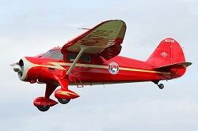Donation: Don Culver
Engine: Pratt & Whitney R-985 Wasp Jr., 300 HP
The Stinson SR-8 was the second Stinson model to mate a double-taper wing (first developed for the Stinson Tri-Motor) to a single engine fuselage. The shape of the wing evoked the nickname "Gull-Wing" even though it wasn't in the conventional gull wing form. The SR-8B had a fuselage wide enough to seat three abreast in the rear seat making it a five-seater. The Gull-Wing Stinson was so popular that customers were known to wait at the company's door for delivery. Nine were sold to the Bureau of Air Commerce, including the 800th airplane built by Stinson. Five SR-8B went to the U.S. Army Air Force as UC-81.
Additional Specifications:
Cruise: 138 MPH
Top Speed: 147 MPH
Empty Weight: 2347 lbs
Gross Weight: 375 lbs
Wing Span: 41'7"
Length: 27'2"
Height: 8'5"
Service Ceiling: 13,800'
Climb in 1 Minute: 800' at sea level
Approximate Number Built: 300
(Data pulled from Joseph Juptner's U.S. Civil Aircraft series.)
1936 Taylor J-2 Cub

Donation: Terry Brandt
Engine: Continental A-40, 37 HP
Fundamentally similar to the E-2, the J-2 was actually an entirely new airplane. Changes were prompted by customer complaints about the E-2 and included wider (by 16”) landing gear, more rounded wingtips and tail, turtledeck (upper part of the fuselage) faired into the trailing edge of the wing for improved aerodynamics and appearance and a “closed” cabin. News about the improved Cub got around and the factory was quickly swamped with orders. The J-2 was ideal for pilot training due to its forgiving flight characteristics. Comments included, “it took a real dumbo to get himself in trouble” and “she wouldn’t hurry nowhere.”
Additional Specifications:
Cruise: 70 MPH
Top Speed: 87 MPH
Empty Weight: 563 lbs
Gross Weight: 970 lbs
Wing Span: 35'3"
Length: 22'5"
Height: 6'8"
Service Ceiling: 12,000'
Climb in 1 Minute: 450' at sea level
Approximate Number Built: 1,200+
(Data pulled from Joseph Juptner's U.S. Civil Aircraft series.)
1937 Aeronca LC
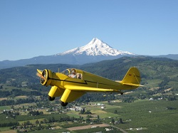Donation: Terry Brandt
Engine: Warner Scarab Jr., 90 HP
A low-wing, two-seat side-by-side airplane whose design was clearly ahead of its time, WAAAM’s LC is probably the last of its type still flying. Only twenty five LC’s had been produced when the factory at Lunken Airport near Cincinnati, Ohio was inundated by the Flood of 1937. After the water receded production of the LC was not resumed. The only truly unusual features of the LC were the sharply tapered wings and the cantilever landing gear with its large streamlined "boots." Floats could be installed for water operations.
Additional Specifications:
Cruise: 108 MPH
Top Speed: 123 MPH
Empty Weight: 1034 lbs
Gross Weight: 1680 lbs
Wing Span: 36'
Length: 24'4"
Height: 7'
Service Ceiling: 15,500'
Climb in 1 Minute: 650' at sea level
Approximate Number Built: 25
(Data pulled from Joseph Juptner's U.S. Civil Aircraft series.)
1937 Fairchild F-46
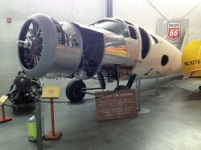Donation: Hap Clarke
Engine: Pratt & Whitney R-985, 450 HP
This project is on display for all to enjoy and will be restored given enough funding and time. It is the first successful aircraft built with the molded plywood process named “Duramold” that was invented by Virginius E. Clark and jointly developed by Fairchild Aircraft and Haskelite Manufacturing. The F-46A is a low wing, cabin type airplane with seating for five. The fuselage is formed of Duramold and the wings use a conventional plywood-covered wood structure. In 1939 Howard Hughes bought the right to use the Duramold process to build his H-4 Hercules, the “Spruce Goose.” The F-46 was first fitted with a Ranger SGV-770 inverted, geared V-12 engine but in 1947 that was replaced with a Pratt Whitney R-985 and flew with the radial engine for another ten years.
1937 Funk Model B
Donation: Terry Brandt
Engine: Ford Model B, 63 HP
Designed and built by Joe and Howard Funk of Kansas the Funk B never did anything exciting but those who got to know it well always talked of it kindly. It was designed for aerodynamics rather than looks and to some it appears out of proportion, even comical. Despite its looks it is actually one of the finest little airplanes ever built. The airplane uses a much-modified Ford Model B engine mounted inverted.
Additional Specifications:
Cruise: 100 MPH
Top Speed: 112 MPH
Empty Weight: 870 lbs
Gross Weight: 1350 lbs
Wing Span: 35'
Length: 20'
Height: 6'
Service Ceiling: 12,000'
Climb in 1 Minute: 550' at sea level
Approximate Number Built: 100
(Data pulled from Joseph Juptner's U.S. Civil Aircraft series.)
1937 Monocoupe 110 Special
Donation: North Cascades Vintage Aircraft Museum
Engine: Warner Super Scarab, 185 HP
Monocoupe 110 Special was a speedster developed from the production Model 110. Modifications that racing pilots wanted to greatly improve its performance included shorter than stock wings (the wingspan was “clipped” from 32’ to 25’), an increase of power to as much as 185 HP, a full cowl for streamlining and improved cooling, wheel pants, smaller wheels and tailwheel and removing protrusions like the cabin step. The modified airplane reached 200 MPH at the 1932 National Air races in Cleveland, OH. The WAAAM airplane was the second of just seven 110 Specials built by the Monocoupe factory. A few others were similarly modified by private owners.
1937 Rearwin 9000-W "Sportster"
Donation: John and Evelyn Lorence
Engine: Warner Scarab Jr., 90 HP
The Sportster was one of Rearwin's more popular models. Of the approximately 260 built, only 9 were Rearwin 9000s and were considered a more deluxe version of the Sportster. Pan American Airways' Juan Trippe only occasionally found time to fly himself but when he did he usually flew his float-equipped Sportster 9000-W over Long Island Sound. Sportsters were popular in Europe for their large (24-gallon) fuel capacity and continued to be popular despite waning popularity in the U.S. around the end of the 30s. It's reported that 13 were built in Sweden under license.
Additional Specifications:
Cruise: 110 MPH
Top Speed: 120 MPH
Empty Weight: 861 lbs
Gross Weight: 1460 lbs
Wing Span: 35'
Length: 22'4"
Height: 6'9"
Service Ceiling: 15,000'
Climb in 1 Minute: 720' at sea level
Approximate Number Built: 9
(Data pulled from Joseph Juptner's U.S. Civil Aircraft series.)
1937 Ryan St-A Special
Donation: North Cascades Vintage Aircraft Museum
Engine: Menasco C-4S, 150 HP
Based on the much admired and acrobatic Ryan Sport Trainer (ST-A) the ST-A Special is a high performance version of the ST-A, mounting a 150 HP supercharged Menasco engine. Supercharging gave it a noteworthy performance boost for higher altitude flying in the mountainous Western U.S.A. That performance made it desirable for military aviation and Ryan built about 180 of the similar ST-M variant for export where it served as a trainer and occasionally as an armed tactical airplane.
Additional Specifications:
Cruise: 135 MPH
Top Speed: 160 MPH
Empty Weight: 1046 lbs
Gross Weight: 1575 lbs
Wing Span: 29'11"
Length: 21'6"
Height: 6'11"
Service Ceiling: 21,000'
Climb in 1 Minute: 1300' at sea level
Approximate Number Built: 13
(Data pulled from Joseph Juptner's U.S. Civil Aircraft series.)
1938 Aeronca KCA "Chief"

Donation: Terry Brandt
Engine: Continental A-50, 50 HP
Designed as the model K with a 2-cylinder Aeronca E-113 engine, the airplane became the KC when it used the Continental A-40 and the KCA with the Continental A-50 engine. Aeronca’s product line was evolving quickly in 1938 so the KCA was built for less than a year.
Additional Specifications:
Cruise: 90 MPH
Top Speed: 100 MPH
Empty Weight: 630 lbs
Gross Weight: 1080 lbs
Wing Span: 36'
Length: 20'7"
Height: 6'6"
Service Ceiling: 14,000'
Climb in 1 Minute: 550' at sea level
Approximate Number Built: 62
(Data pulled from Joseph Juptner's U.S. Civil Aircraft series.)
1938 Dart Model G
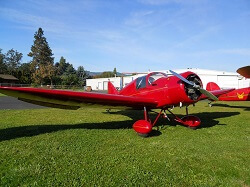Donation: Terry Brandt
Engine: Lambert 90, 90 HP
Originally sold as the Lambert Monosport, the rights to the design were sold to the Dart Manufacturing Corporation. This airplane was designed and built by Al Mooney, who went on to design many airplanes and to found the Mooney Airplane Company. Its structure is a steel tube fuselage with wood wings. Several engines were fitted to the Dart G including the Lambert 90 HP R-266 5-cylinder radial, the Warner Scarab Junior radial and the Continental A-100. Our Dart G was flown in the movie The Tarnished Angels starring Robert Stack, Dorothy Malone, Rock Hudson and Jack Carson.
Additional Specifications:
Cruise: 118 MPH
Top Speed: 135 MPH
Empty Weight: 922 lbs
Gross Weight: 1517 lbs
Wing Span: 29'6"
Length: 29'6"
Height: 6'
Service Ceiling: 16,000'
Climb in 1 Minute: 950' at sea level
Approximate Number Built: 51
(Data pulled from Joseph Juptner's U.S. Civil Aircraft series.)
1937 Fairchild 24G
Donation: North Cascades Vintage Aircraft Museum
Engine: Warner Super Scarab, 145 HP
A sturdily-built airplane, the Fairchild 24 adapted several automotive features including its brakes and roll-down windows. Initially built with just two seats, the third was added in 1933 and the fourth in 1938. One aviation writer described its cabin accommodations as “like flying your living room.” The early 24s were fitted with the Warner radial engine and over the production run several other engines were offered. Its structure is especially robust, using bigger than usual steel tubing. The UC-86 is the military version of the Fairchild 24R-40.
Additional Specifications:
Cruise: 118 MPH
Top Speed: 130 MPH
Empty Weight: 1475 lbs
Gross Weight: 2400 lbs
Wing Span: 36'4"
Length: 23'10"
Height: 7'4"
Service Ceiling: 16,500'
Climb in 1 Minute: 675' at sea level
Approximate Number Built: 100
(Data pulled from Joseph Juptner's U.S. Civil Aircraft series.)
1938 Piper J-3-P Cub
Donation: Terry Brandt
Engine: Lenape Papoose, 50 HP
The J-3 Cub was originally sold with the 40 HP Continental A-40 engine. Sorely underpowered and handicapped by the single ignition system, the Cub was later fitted with other engines including the 50 HP Lenape Papoose (nee Aeromarine AR-3). Only about 50 Cubs were sold with this engine.
Additional Specifications:
Cruise: 81 MPH
Top Speed: 92 MPH
Empty Weight: 630 lbs
Gross Weight: 1100 lbs
Wing Span: 35'3"
Length: 22'4"
Height: 6'8"
Service Ceiling: 12,000'
Climb in 1 Minute: 500' at sea level
Approximate Number Built: 50
(Data pulled from Joseph Juptner's U.S. Civil Aircraft series.)
1938 Rearwin 6000-M "Speedster"
Acquired with funds from Founding Memberships.
Engine: Menasco C-4, 125 HP
Designed in 1934 the Speedster is one of Rearwin’s most exciting designs. The narrow-fuselage Speedster was built for speed. Its inability to successfully complete spin testing kept it off the market for several years and by the time it was sellable the market had pretty much passed it by. It is one of the most popular old airplanes among model airplane builders.
Additional Specifications:
Cruise: 135 MPH
Top Speed: 150 MPH
Empty Weight: 1067 lbs
Gross Weight: 1700 lbs
Wing Span: 32'3"
Length: 22'10"
Height: 6'10"
Service Ceiling: 17,000'
Climb in 1 Minute: 1200' at sea level
Approximate Number Built: 12
(Data pulled from Joseph Juptner's U.S. Civil Aircraft series.)
1938 Taylor J-3 Cub 1st Edition
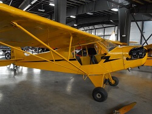Donated: Terry Brandt
Engine: Continental A-65, 65 HP
The J-3 was a much-upgraded Taylor Cub. When first produced, the J-3 was powered by the same Continental A-40 engine used on the E-2 and J-2 but the requirement for dual ignition engines was enacted around that time and the Cub was fitted with other engines, finally settling on the Continental 65 HP engine, an important part of the Cub legend. The J-3 Cub is loved by pilots for its character, its low cost of operation and easy maintenance. It is flight at its most basic.
Additional Specifications:
Cruise: 82 MPH
Top Speed: 92 MPH
Empty Weight: 640 lbs
Gross Weight: 1100 lbs
Wing Span: 35'3"
Length: 22'3"
Height: 6'8"
Service Ceiling: 12,000'
Climb in 1 Minute: 575' at sea level
(Data pulled from Joseph Juptner's U.S. Civil Aircraft series.)
1938 Taylor-Young BC-65
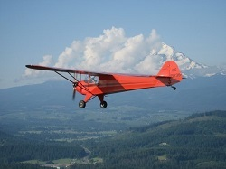Acquired with funds from Don Mayo and Ty Ross.
Engine: Continental A-65, 65 HP
Taylor-Young had great success selling their Model A with the 40 HP engine. That model's popularity delayed their bringing the 50 HP version to market but the added power was sure to make a good airplane even better and as word spread sales were brisk. Once Continental delivered their 65 HP engine in 1939 BC-65's were selling as fast as they were made.
Additional Specifications:
Cruise: 95 MPH
Top Speed: 105 MPH
Empty Weight: 730 lbs
Gross Weight: 1200 lbs
Wing Span: 36'
Length: 21'10"
Height: 6'8"
Service Ceiling: 14,500'
Climb in 1 Minute: 600' at sea level
Approximate Number Built: 2,400
(Data pulled from Joseph Juptner's U.S. Civil Aircraft series.)
1939 Porterfield CP50
Donation: Charles Rushford
Engine: Continental A-50, 50 HP
E.E. Porterfield founded a flying school in 1925 which led to his founding American Eagle Aircraft Company. Although American Eagle failed early in the Great Depression, Porterfield persisted in aviation. In 1934 he formed the Porterfield Aircraft Company to build light airplanes. They sported especially slim fuselages, earning the nickname “Skinny Bird” and were sold with a variety of engines. When reliable 50 HP engines became available Porterfield adapted his design to accommodate these engines from Continental, Franklin and Lycoming. The CP-50 was well suited to training, finding considerable use in the Civilian Pilot Training Program. Porterfield named this series the “Collegiate.” Famed race pilot Roscoe Turner was Porterfield’s sales manager during the time of development and production of the CP-50.
Additional Specifications:
Cruise: 90 MPH
Top Speed: 102 MPH
Empty Weight: 659 lbs
Gross Weight: 1108 lbs
Wing Span: 34'9"
Length: 22'6"
Height: 7'
Service Ceiling: 12,000'
Climb in 1 Minute: 460' at sea level
Approximate Number Built: 50
(Data pulled from Joseph Juptner's U.S. Civil Aircraft series.)
1939 Slingsby T.6 Kirby Kite
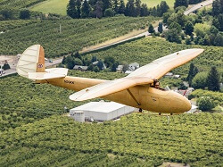Photo credit: Lyle Jansma
Acquired with funds from Jerry Wenger
Fred Slingsby was an RAF pilot who repaired gliders and designed his own which were based on German designs. He founded Slingsby Sailplanes, Ltd., moved it to the village of Kirbymoorside, England and in 1935 made improvements to the very successful German Grunau Baby II, which he was building under license. He extended the wing span slightly, used Grunau Baby parts wherever he could and streamlined the fuselage, dubbing his glider the T.6 Kirby Kite. It was a high performance aircraft for its time, making a 55-mile flight in its first competition. In WWII sixteen Kirby Kites were impressed into service for RAF pilot training. Of the many Kirby Kites built only about eight remain. The one in WAAAM’s collection was restored by Bob Gaines with the original varnish finish it had from the factory in 1939. In 2002 this airplane won the Vintage Sailplane Association Restoration Award.
1939 Slingsby T.13 Petrel
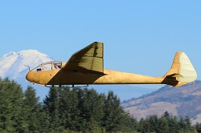Acquired with funds from Jerry Wenger.
Based in part on the successful German Rhönadler, the Slingsby Petrel quickly became a darling of the skies. After just three units production halted due to World War II. During the war this Petrel was impressed for training both anti-aircraft gun crews and the Royal Observer Corps’ aerial spotters. Post-war, as British Glider Association (BGA) 418, WAAAM’s Petrel continued to draw the eyes of many including the glider enthusiast Bob Gaines of the USA who purchased this glider in 2001 and was flying it stateside by 2002. Gaines began a complete restoration in 2005 but he passed away before it was finished. Through the generosity of WAAAM’s donors, the museum was able to acquire four gliders from the Gaines collection. The Petrel restoration was completed to original factory style and once again took to the air in June 2017.
1940 Cessna Airmaster C-165
Donor: Wayne Edsall
Engine: Warner Scarab, 165 HP
In the depression of the early 1930's Cessna Aircraft was essentially defunct. As the economy improved Clyde Cessna's nephew Dwane Wallace designed a stylish, cantilever-winged 4-seat airplane and persuaded Cessna to revive his company to produce it. The C-165 Airmaster was the final and highest-powered version of that series and it was the last tube and fabric airplane that Cessna produced. The cantilever wing had no drag-producing struts and braces so it slipped through the air easily, prompting Joseph Juptner to write, "no airplane of the time could match it for efficiency."
Additional Specifications:
Cruise: 157 MPH
Top Speed: 169 MPH
Empty Weight: 1400 lbs
Gross Weight: 2350 lbs
Wing Span: 34'2"
Length: 25'
Height: 7'
Service Ceiling: 19,300'
Climb in 1 Minute: 925' at sea level
Approximate Number Built: 228
(Data pulled from Joseph Juptner's U.S. Civil Aircraft series.)
1940 Fairchild UC-86
Acquired with funds from Founding Memberships.
Engine: Ranger 6-440, 175 HP
This is a military version of the Fairchild 24R40. A sturdily-built airplane, the 24 adapted several automotive features including its brakes and roll-down windows. Initially built with just two seats, the third was added in 1933 and the fourth in 1938. This airplane was one of nine Fairchild 24R40's impressed into service by the Army as the UC-86 at the onset of WWII. A total of 2,232 Model 24's were built.
Additional Specifications:
Cruise: 125 MPH
Top Speed: 140 MPH
Empty Weight: 1561 lbs
Gross Weight: 2550 lbs
Wing Span: 36'4"
Length: 24'10"
Height: 7'3"
Service Ceiling: 17,000'
Climb in 1 Minute: 800' at sea level
Approximate Number Built: 34
(Data pulled from Joseph Juptner's U.S. Civil Aircraft series.)
1940 Piper J-3 Cub
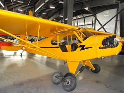Donation: Terry Brandt
Engine: Continental A-65, 65 HP
The Legend. The J-3 was a much-upgraded Taylor Cub. After the company’s owners parted ways in December 1937 the factory was moved to Lock Haven, PA and reorganized as the Piper Aircraft Company. When first produced, the J-3 was powered by the same Continental A-40 engine used on the E-2 and J-2 but the requirement for dual ignition engines was enacted around that time and the Cub was fitted with other engines, finally settling on the Continental 65 HP engine, an important part of the Cub legend. Today's popularity of the Cub is not simply nostalgia, it is "stick and rudder flying" in its most elementary form.
Additional Specifications:
Cruise: 65 MPH
Top Speed: 76 MPH
Empty Weight: 680 lbs
Gross Weight: 1220 lbs
Wing Span: 35'3"
Length: 22'5"
Height: 6'8"
Service Ceiling: 11,500'
Climb in 1 Minute: 450' at sea level
Approximate Number Built: 19,888
(Data pulled from Joseph Juptner's U.S. Civil Aircraft series.)
1940 Piper J-3 Cub on Floats
Donation: Terry Brandt
Engine: Continental A-65, 65 HP
Cubs could be fitted with floats for water operations, particularly for back country use. While the floats are large, they are very light. Floats generally cause considerable drag and slow the airspeed of an airplane but the Cub on floats actually flies 2 MPH faster than a Cub on wheels due to the geometry of the installation. The Cub floats generate their own lift, taking some load off the wings.
1940 Piper J-4A Cub Coupe
Donation: Jack Kahle
Engine: Continental A-85, 85 HP
Piper's first airplane with side-by-side seats, it was Piper's response to Taylorcraft's side-by-side design. It is an evolution of the J-3 Cub and was Piper’s first airplane with a fully cowled engine. Its performance lagged so Piper piled on extras that were normally extra cost options. That it was popular is beyond doubt; Joseph Juptner remarked that "it sold like penny candy near a schoolyard." It was so popular on the West Coast that it was shipped there by the boxcar load. One pilot remarked on its ease of getting in and out writing, “It doesn’t require a short course in yoga.” The onset of WWII ended production of the Cub Coupe after building some 1,250 of all versions.
Additional Specifications:
Cruise: 96 MPH
Top Speed: 100 MPH
Empty Weight: 865 lbs
Gross Weight: 1400 lbs
Wing Span: 36'2"
Length: 22'6"
Height: 6'10"
Service Ceiling: 12,000'
Climb in 1 Minute: 450' at sea level
Approximate Number Built: 90
(Data pulled from Joseph Juptner's U.S. Civil Aircraft series.)
1940 Piper J-5A Cub Cruiser
Donation: Terry Brandt
Engine: Continental A-75, 75 HP
The Piper J-5A is a modest evolution of the J-3 Cub with the pilot moved to the front seat, the fuselage widened to accommodate two (slender) passengers in the rear seat and the installation of a “real” door. Engine power was increased from 65 to 75 HP though performance changed only a little. Selling for just $1,798 it was the lowest priced 3-place airplane available. During WWII some J-5A were impressed into service as L-4F Grasshoppers and at the war’s end civilian production resumed with a designation change to PA-12 Super Cruiser. The Navy’s HE-1 is based on the J-5 airframe.
Additional Specifications:
Cruise: 85 MPH
Top Speed: 95 MPH
Empty Weight: 820 lbs
Gross Weight: 1450 lbs
Wing Span: 35'6"
Length: 22'6"
Height: 6'10"
Service Ceiling: 10,000'
Climb in 1 Minute: 450' at sea level
Approximate Number Built: 1,507
(Data pulled from Joseph Juptner's U.S. Civil Aircraft series.)
1940 Rearwin 8135 Cloudster
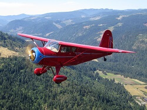Acquired with funds from Don Mayo and Bill Bremmeyer.
Engine: Ken-Royce 7G, 120 HP
First produced in 1939 the Cloudster was Rearwin’s deluxe airplane, produced in several versions ranging from two seats with 90 HP to three seats with 125 HP. The models sold to the public received special attention to streamlining, comfort and above average performance. Rearwin guaranteed that the Cloudster would fly over any mountain in the U.S.A. Pan American Airways bought several modified Cloudsters for instrument and navigation training and twenty five went to Iran as utility-trainers. The Ken-Royce (formerly LeBlond) engines were built by Rearwin but by the time of the Cloudster, the radial form engine was giving way to the horizontal-opposed “flat” form engine in sport and training airplanes. Even so, the Cloudster retained its appeal long after production ended.
Additional Specifications:
Cruise: 120 MPH
Top Speed: 135 MPH
Empty Weight: 1140 lbs
Gross Weight: 1900 lbs
Wing Span: 34'2"
Length: 21'6"
Height: 7'4"
Service Ceiling: 15,000'
Climb in 1 Minute: 860' at sea level
Approximate Number Built: 125
(Data pulled from Joseph Juptner's U.S. Civil Aircraft series.)
1940 Saint Louis YPT-15
1941 Aeronca 65-TAL Defender
Donation: Judy Newman
Engine: Lycoming O-145, 65 HP
The Aeronca Tandem was designed specifically for WWII's Civilian Pilot Training Program. Aeronca had offered the Chief model for that program but the Army refused it because of its side-by-side seats. Aeronca quickly designed the Tandem as a brand new airplane, although it was clearly an Aeronca. Its most notable design innovation was positioning the rear seat five inches higher than the front for better visibility. When the U.S.A. joined the war the Tandem was renamed the Defender. This airplane was the basis for the post-war civilian Champ.
Additional Specifications:
Cruise: 87 MPH
Top Speed: 95 MPH
Empty Weight: 750 lbs
Gross Weight: 1200 lbs
Wing Span: 35'
Length: 21'10"
Height: 9'1"
Service Ceiling: 12,000'
Climb in 1 Minute: 450' at sea level
Approximate Number Built: 900+
1941 Culver Cadet LCA
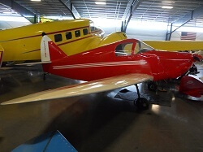Donation: Terry Brandt
Engine:Continental A-75, 75 HP
The Cadet was designed in 1939 by Al Mooney as an evolution of the Culver Dart and it was a hit right out of the box. It features elliptical wings (like the British Spitfire) for speed and low aerodynamic drag and it had mechanically retractable landing gear. It was a popular cross-country flyer, being one of the most efficient airplanes ever built, and as a sport plane it was the best high-speed bargain in the country. It was sold with a Continental engine or, as the model LFA, with a Franklin engine. The Army chose the Cadet in 1940 for use as a radio-controlled target drone with several designators including LAR, LAR-90, PQ-8(A) and Q-8(A) and for the Navy TDC-1 and TDC-2.
Additional Specifications:
Cruise: 120 MPH
Top Speed: 140 MPH
Empty Weight: 750 lbs
Gross Weight: 1305 lbs
Wing Span: 27'
Length: 17'8"
Height: 5'6"
Service Ceiling: 17,000'
Climb in 1 Minute: 800' at sea level
Approximate Number Built: 359
(Data pulled from Joseph Juptner's U.S. Civil Aircraft series.)
1941 Piper J-4A Cub Coupe
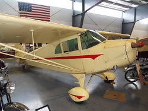Donation: Terry Brandt
Engine: Continental A-65, 65 HP
Piper's first airplane with side-by-side seats, it was Piper's response to Taylorcraft's side-by-side design. It is an evolution of the J-3 Cub and was Piper’s first airplane with a fully cowled engine. Its performance lagged so Piper piled on extras that were normally extra cost options. That it was popular is beyond doubt; Joseph Juptner remarked that "it sold like penny candy near a schoolyard." It was so popular on the West Coast that it was shipped there by the boxcar load. One pilot remarked on its ease of getting in and out writing, “It doesn’t require a short course in yoga.” The onset of WWII ended production of the Cub Coupe after building some 1,250 of all versions.
Additional Specifications:
Cruise: 92 MPH
Top Speed: 100 MPH
Empty Weight: 740 lbs
Gross Weight: 1300 lbs
Wing Span: 36'2"
Length: 22'6"
Height: 6'10"
Service Ceiling: 10,500'
Climb in 1 Minute: 450' at sea level
Approximate Number Built: 90
(Data pulled from Joseph Juptner's U.S. Civil Aircraft series.)
1941 Stearman 450 HP Acrobatic Show Airplane
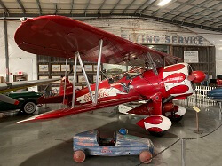Donation: Doug &Jordan Jaffee
Engine: Pratt & Whitney R-985, 450 HP
The two-seat Stearman biplane trainer was developed from the Stearman Model 70 prototype which was first flown on New Years Day 1934. Despite being an already obsolete design it gave yeoman service in training pilots for wartime and has found a devoted following post-WWII. In civilian duty this PT-17 was flown for many years by air show performers Bob and Pat Wagner. It is fitted with a substantially larger engine for performance aerobatics, a smoke system, and a wing-top stand for a wing walker.
1941 Taylorcraft BC12-65
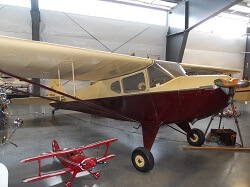Donation: Chuck and Marge Babcock
Engine: Continental A-65, 65 HP
The BC12-65 is an enhanced BC-65. The differences are mostly details, such as its two-tone paint scheme and some earlier options became standard equipment. Its performance was generally unchanged from its older brother's. Production of this model stopped during WWII while the factory attended to war production but resumed afterward with renewed popularity. For those in the know, this was Charlie McAlister’s airplane.
Additional Specifications:
Cruise: 95 MPH
Top Speed: 105 MPH
Empty Weight: 640 lbs
Gross Weight: 1150 lbs
Wing Span: 36'
Length: 22'
Height: 6'8"
Service Ceiling: 15,000'
Climb in 1 Minute: 640' at sea level
Approximate Number Built: 2,400
(Data pulled from Joseph Juptner's U.S. Civil Aircraft series.)
1942 Aeronca L-3B Grasshopper
Donation: Terry Brandt
Engine: Continental A-65, 65 HP
Derived from Aeronca’s civilian Tandem Trainer and Chief models, this airplane entered Army Air Corps service in 1941 as the O-58. It was designated L-3B when the Air Corps changed its classification system. It served mostly as a trainer. In 1942 some 250 units of a glider variant were built using the same airframe and that was designated TG-5.
Additional Specifications:
Cruise: 79 MPH
Top Speed: 88 MPH
Empty Weight: 820 lbs
Gross Weight: 1325 lbs
Wing Span: 35'5"
Length: 22'4"
Height: 7'2"
Service Ceiling: 12,500'
Climb in 1 Minute: 525' at sea level
Approximate Number Built: 2000+
(Data pulled from Joseph Juptner's U.S. Civil Aircraft series.)
1942 Bowlus BA-100 Baby Albatross
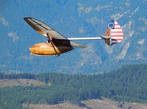Donation: Leonard Sharpe
In the late 1930’s William Hawley Bowlus advertised in popular magazines his single-seat BA-100 Baby Albatross design. It was sold as a series of partial kits offering affordable flying at a time when money was hard to come by. The kit cost totaled $425 but, for those who could afford it, the Baby Albatross was available factory-built and ready to fly for about $750. The fuselage pod is a wooden monocoque design and the balance of the structure is wood with fabric covering. The wing design was based on that of the German Grunau Baby 2. Parts for 90 aircraft were made but according to the National Air and Space Museum probably only 50-60 were completed and flown. Distance flights of 263 and 280 miles were flown in the Baby Albatross as well as a flight to 10,000 feet of altitude. Bowlus’ company was backed by many aviation luminaries such as Reuben H. Fleet, Al Menasco, Donald Douglas and Glenn Martin.
1942 Frankfort TG-1A "Cinema B"
Donation: Jerry Wenger
This is a project on display and will be restored given enough time and funding.
The Frankfort Sailplane Company of Joliet, Illinois manufactured the civilian single-seat Cinema glider in the late 1930’s. In 1940 they designed a two-seat version, the Cinema B. The Cinema B had a steel tube fuselage with wood/fabric wings that were single strut braced. When the Army procured Cinema B’s for pilot training they had Frankfort change the fully moveable tail surfaces to conventional rudder & elevator tails. The TG-1A was the first training glider procured by the Army.
1942 Laister-Kauffman TG-4A Training Glider

Donation: Frederick Moore
As a builder of successful pre-World War II sport gliders, Laister-Kauffman was in a strong position to meet the Army’s requirements for a training glider. The initial order for 75 TG-4As was so well received a second order for 75 was placed. The TG-4A, at $4,062 apiece, was on the high end of the procurement cost range for gliders but the price included a transport trailer. Unfortunately, what was good for the civilian market – most notably, light handling and a good glide ratio – did not correspond well to the type of experience glider pilots needed for flying cumbersome combat gliders. WAAAM’s TG-4A was donated to the museum in late 2017 and was restored and flown in Spring 2018.
Additional Specifications:
Glide Ratio: 22:1
Empty Weight: 476 lbs
Gross Weight: 875 lbs
Wing Span: 50'
Length: 21'4"
Height: 3'8"
Approximate Number Built: 153
1942 Piper L-4A Grasshopper
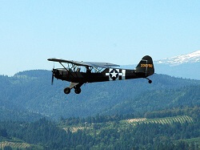Donation: Terry Brandt
AEngine: Continental A-65, 65 HP
The L-4 is a Piper J-3-C65 Cub airframe modified by enlarging the windows to improve observer visibility. Originally designated O-59A it was redesignated L-4A as its mission and Army nomenclature were redefined from observation to liaison in 1942.
Additional Specifications:
Cruise: 65 MPH
Top Speed: 92 MPH
Empty Weight: 730 lbs
Gross Weight: 1220 lbs
Wing Span: 35'2"
Length: 22'3"
Height: 6'8"
Service Ceiling: 10,000'
Climb in 1 Minute: 450' at sea level
Approximate Number Built: 5,555
1942 Piper TG-8 Training Glider
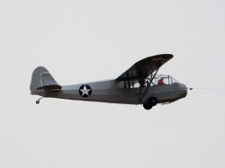Acquired with funds from museum donations.
Piper was the last of the three civilian “cub type” companies contracted to build their version of a training glider. Piper’s design was a favorite because so much of the glider was kept similar to their L-birds. By utilizing cost-cutting elements such as using rudder pedal springs for the spoiler return springs and other techniques, the cost of the TG-8 came in well under the other TGs at $2108 per glider. WAAAM’s TG-8 left service in late 1944 and was acquired by WAAAM as a project in 2012 through the generosity of the museum’s donors. The restoration began under Director of Aircraft Restorations Tom Murphy and finished by his successor Jakonah “Jay” Matson Bell and our crew of volunteers. WAAAM took it to EAA's Airventure in Oshkosh, WI in 2018 where it flew in the Warbird Review during the Friday and Saturday airshows.
1942 Ryan Aeronautical PT-22 "Recruit"
Donation: Terry Brandt
Engine: Kinner R-55, 160 HP
The Ryan PT-22 is a primary trainer, meaning that it would be the first airplane a pilot trainee would be introduced to in his flight training. It was based on the famous Ryan ST but it was much modified to meet the Army’s needs. The Recruit was a stern taskmaster and students who were inattentive to airspeed near the runway would scare or hurt themselves and bend airplanes. Ryan built this airplane from 1940-1942.
Additional Specifications:
Cruise: 110 MPH
Top Speed: 128 MPH
Empty Weight: 1313 lbs
Gross Weight: 1860 lbs
Wing Span: 31'1"
Length: 22'8"
Height: 7'2"
Service Ceiling: 14,800'
Climb in 1 Minute: 860' at sea level
Approximate Number Built: 1000+
(Data pulled from Joseph Juptner's U.S. Civil Aircraft series.)
1942 Schweizer TG3A Training Glider
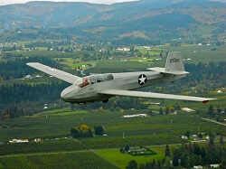Year: 1943
Acquired with museum funds and funds by Don Mayo.
The TG-3A is a two-seat glider designed and built during WWII to train pilots to fly the WACO CG-4A Hadrian transport glider. This wood wing design superseded the aluminum-winged TG-2 because aluminum’s wartime status as a strategic material severely limited its availability. Construction is tube and fabric fuselage with a fabric covered wood wing. All but one of the production run of 114 were built for the U.S. Army Air Force. Nearly two years after the war ended the FAA issued a type certificate for it as the Schweizer SGS 2-12 although none were built as that model. This is the last known flying aircraft of its kind.
Additional Specifications:
Glide Ration: 20:1
Empty Weight: 820 lbs
Gross Weight: 1200 lbs
Wing Span: 54'
Length: 27'7"
Height: 8'
Approximate Number Built: 114
1942 Stinson L-5 Sentinel
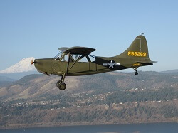Donation: Terry Brandt
Engine: Lycoming O-435, 185 HP
First flown in June 1940 with a 100 HP engine, the Sentinel was more or less a military adaptation of Stinson’s Voyager design. The L-5 was an especially tough airplane and as it evolved and horsepower increased by steps to 185 the tasks asked of it often bordered on the impossible. Nicknamed “The Flying Jeep” it gave service in nearly every WWII theater of operation and remained active with the USAF and Marine Corps into the 1950’s.
Additional Specifications:
Cruise: 110 MPH
Top Speed: 130 MPH
Empty Weight: 1550 lbs
Gross Weight: 2020 lbs
Wing Span: 34'
Length: 24'1"
Height: 7'11"
Service Ceiling: 15,800'
Climb in 1 Minute: 975' at sea level
Approximate Number Built: 4,200
1942 Taylorcraft TG-6 Training Glider
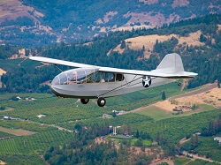Donation: Terry Brandt
Derived by modifying the airframe of the L-2 Grasshopper, gliders of this type were used to train the pilots of the WACO gliders used in the D-Day invasion of Europe. The instructor would sit in the rearmost seat, the beginning student in the center and the intermediate student in the front. When the intermediate student went on to advanced training the beginner would move to the front seat. After the war these were sold as surplus and nearly all of those were converted to power planes.
1943 Cessna UC-78 "Bobcat"
Acquired with funds from Founding Memberships.
Engine: Jacobs R-915-7, 330 HP
The T-50 (civilian designation) Bobcat was Cessna’s first twin engine aircraft. It was a multiengine trainer (AT-8, AT-17) that was also used as a cargo and personnel carrier (T-50, UC-78). Its airframe is steel tube and fabric and the wing structure is wood. As a military trainer in the early 40’s this airplane acquired many nicknames, several based on its wood construction. Among them “Bamboo Bomber”, “Double-breasted Cub”, “Useless 78” and “Rhapsody in Glue”. The Sky King television series of the 1950’s flew a Bobcat in the first year of the series.
Additional Specifications:
Cruise: 150 MPH
Top Speed: 179 MPH
Empty Weight: 4050 lbs
Gross Weight: 5700 lbs
Wing Span: 41'11"
Length: 32'9"
Height: 9'1"
Service Ceiling: 15,000'
Climb in 1 Minute: 1525' at sea level
Approximate Number Built: 5399
1943 Fairchild PT-19B
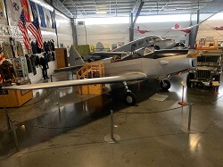Donation: Sam & Alison Richardson
Engine: Ranger L-440, 200 HP
At the start of WWII most primary flight training in the Army Air Corps used biplanes. Given that the performance of combat aircraft was increasing, the Army evaluated trainers that would prepare pilot trainees for high performance fighters. The Fairchild M-62 with a Ranger 6-440 engine met this need and the Army ordered 270 designating them PT-19. It was superior to the biplane trainers in having flight characteristics (speed and wing loading) that resembled the combat aircraft the trainees would soon be flying. The Army then ordered 3,703 with increased power as PT-19A and then an additional 917 with added instruments and a hood over the front cockpit for instrument flight training as PT-19B.
Additional Specifications:
Cruise: 110 MPH
Top Speed: 132 MPH
Empty Weight: 1845 lbs
Gross Weight: 2545 lbs
Wing Span: 35'11"
Length: 27'8"
Height: 7'9"
Service Ceiling: 16,000'
Climb in 1 Minute: 760' at sea level
Approximate Number Built: 917
1943 Interstate L-6
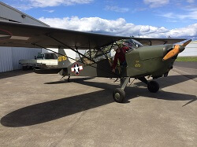Acquired with funds from Ty Ross, and Dick & Joan Johnson.
Engine: Franklin O-200, 115 HP
First procured by the Army as the XO-63 Cadet, this was the last airplane to be assigned an “O” (for observation) designation. This airplane is based on the civilian Interstate Cadet. The WAAAM L-6 uses a geared Franklin engine. The large, outward-canted windows made it an excellent observation platform but engine overheating was a problem that was never fully solved. The military procured fewer L-6 than any of the other L-birds, probably because of the aforementioned overheating as well as its high cost. One Interstate L-6 cost nearly as much as three Piper L-4. In 1972 a 75 HP S-1A Cadet (civilian designation) flew to 30,800 feet to set a world altitude record for light aircraft.
Additional Specifications:
Cruise: 105 MPH
Top Speed: 114 MPH
Empty Weight: 1195 lbs
Gross Weight: 1745 lbs
Wing Span: 35'6"
Length: 23'5"
Height: 7'4"
Service Ceiling: 16,000'
Climb in 1 Minute: 850' at sea level
Approximate Number Built: 250
(Data pulled from Joseph Juptner's U.S. Civil Aircraft series.)
1943 Piper HE-1
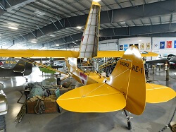Donation: Terry Brandt
Engine: Lycoming O-235, 112 HP
In 1942 the Navy ordered 100 HE-1 airplanes for air ambulance service. These were based on Piper’s J5-C Cruiser, a descendant of the J3 Cub. In 1943 the HE designation was changed to AE when the Army reassigned H to helicopters. The opening turtledeck (for the Stokes stretcher) and bright yellow color are distinctive and several of these airplanes have been restored for flight.
Additional Specifications:
Cruise: 100 MPH
Top Speed: 110 MPH
Empty Weight: 906 lbs
Gross Weight: 1550 lbs
Wing Span: 35'6"
Length: 22'6"
Height: 6'8"
Service Ceiling: 15,000'
Climb in 1 Minute: 600' at sea level
Approximate Number Built: 100
(Data pulled from Joseph Juptner's U.S. Civil Aircraft series.)
1943 Stearman N2S-3
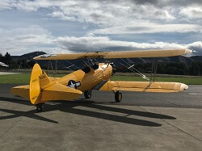Donation: Terry Brandt
Engine: Continental W670, 220 HP
The "Kaydet" was the first military trainer airplane to be completely standardized for both Army (as PT-17) and Navy (as N2S-3). By late 1940 Boeing’s Stearman division production line was completing an airplane every three hours. Stearmans were the first airplanes trainees would fly and some 60,000 pilots took training in them. As a trainer it was built tough to take the punishment doled out by primary students and the airplane’s ground handling demanded their full attention. For 20 years after WWII ended the Stearman was the airplane of choice for “crop dusting” conversion. Most Stearmans today are flown for sport and for exhibition.
Additional Specifications:
Cruise: 96 MPH
Top Speed: 124 MPH
Empty Weight: 2098 lbs
Gross Weight: 2810 lbs
Wing Span: 32'2" / 31'2"
Length: 24'10"
Height: 9'4"
Service Ceiling: 13,200'
Climb in 1 Minute: 800' at sea level
Approximate Number Built: 1,875
(Data pulled from Joseph Juptner's U.S. Civil Aircraft series.)
1943 Taylorcraft L-2M Grasshopper
Donation: Terry Brandt
Engine: Continental A-65, 65 HP
Taylorcraft had been building airplanes with side-by-side seats but the market demanded tandem seating, especially for military and Civilian Pilot Training Program use. Production began in July 1941 and buyers were soon practically snatching them off the production line. The L-2 was built with Continental, Lycoming and Franklin engines and sported a distinctive “greenhouse” cabin. The L-2M had a fully cowled engine and spoilers. This airframe was modified into the TG-6 training glider with about 250 built.
Additional Specifications:
Cruise: 83 MPH
Top Speed: 94 MPH
Empty Weight: 875 lbs
Gross Weight: 1325 lbs
Wing Span: 35'5"
Length: 22'9"
Height: 6'8"
Service Ceiling: 12,000'
Climb in 1 Minute: 455' at sea level
Approximate Number Built: 900-ish
1945 Piper L-4J Grasshopper
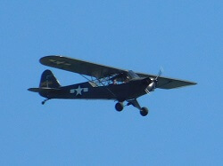Donation: Terry Brandt
Engine: Continental A-65, 65 HP
The L-4 is a Piper J-3-C65 Cub airframe modified by enlarging the windows to improve observer visibility. The L-4J (this airplane) is similar to the L-4A but with several minor adjustments. Both were used for liaison missions.
Additional Specifications:
Cruise: 75 MPH
Top Speed: 92 MPH
Empty Weight: 640 lbs
Gross Weight: 1100 lbs
Wing Span: 35'2.5"
Length: 22'3"
Height: 6'8"
Service Ceiling: 12,000'
Climb in 1 Minute: 400' at sea level
Approximate Number Built: 5,703
1946 Commonwealth Skyranger 185
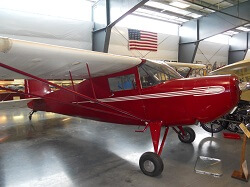Donation: Gary Lintner
Engine: Continental A-85, 85 HP
Designed in 1939 by Robert Rummell, Rearwin built 80 units before WWII stopped production of civilian airplanes. Rearwin was reorganized in 1943 as Commonwealth Aircraft Corp and after the war they resumed production of the Skyranger, aimed at businessmen and sport flyers. The slots in the wing’s outboard leading edge let the plane fly with the wing at higher angles of attack than a wing without slots. A technical note: In general, slots are non-moveable openings near the leading edge of the wing while slats are moveable and are installed only on large airplanes.
Additional Specifications:
Cruise: 103 MPH
Top Speed: 115 MPH
Empty Weight: 910 lbs
Gross Weight: 1450 lbs
Wing Span: 34'
Length: 21'5"
Height: 7'
Service Ceiling: 14,000'
Climb in 1 Minute: 650' at sea level
Approximate Number Built: 275
(Data pulled from Joseph Juptner's U.S. Civil Aircraft series.)
1946 Luscombe 8A
1947 Curtiss 1912 Headless Pusher Replica
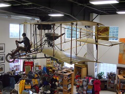Donation: Terry Brandt
Engine: Continental A-85, 85 HP
Northwest Airlines Chief Pilot Walter Bullock learned to fly in 1916 in a Curtiss Pusher. Nearing retirement in the mid-1940s, Bullock wanted to fly a Pusher once again but when he couldn't find an original airplane to restore, he built this replica (in 1947) which has reenacted a number of historic flights. In 1959 Peter M. Bowers repeated Glenn Curtiss' 1910 Hudson River flight (Albany-to-New York City, ~150 miles). WAAAM Director of Restorations Tom Murphy has reenacted two historic flights, both first made in the Northwest in 1912. In 1992 he reprised Walter Edwards' airmail flight from Oregon to Washington and in 1995 he reprised Silas Christofferson's Multnomah Hotel Flight, taking off from a platform built on the eight-story hotel's roof. The original and reenactment flights all landed at the Vancouver Barracks, now Pearson Field.
1947 Stinson 108-3 Station Wagon
1948 Aeronca K
Acquired with funds from museum donors.
Engine: Aeronca E-113, 40 HP
Designed with a fully enclosed cockpit and a 2-cylinder, dual-ignition Aeronca E-113C engine the 2-seat Model K "Scout" brought Aeronca into the mainstream of airplane design. The update to dual-ignition and the replacement of kingpost/wire stays with a strut-braced wing were done to meet new airworthiness regulations. The bare airframe lets you see the structure that’s ordinarily hidden by the fabric covering. This project is on display at the museum and will be restored given enough time and funding.
Additional Specifications:
Cruise: 85 MPH
Top Speed: 93 MPH
Empty Weight: 590 lbs
Gross Weight: 1040 lbs
Wing Span: 36'
Length: 20'7"
Height: 6'7"
Service Ceiling: 12,000'
Climb in 1 Minute: 450' at sea level
Approximate Number Built: 357
(Data pulled from Joseph Juptner's U.S. Civil Aircraft series.)
1948 Emigh A-2 Trojan
Donation: John & Evelyn Lorence
Engine: Continental C-90, 90 HP
As rugged and uncomplicated as a farm machine, this plane is unusual in many ways. The wings use symmetrical airfoils (i.e. having the same curve top and bottom). Having no internal structure, their multiple sections are joined by external flanges protruding from the surface of the wing. The plane was designed for easy manufacturing. The wings are interchangeable L-R, as are the vertical fin and both horizontal stabilizers, the rudder and elevators and all three landing gear. Introduced in 1947 it unfortunately went into production at a time when new private, two-seat airplanes were just not selling. It had been designed for a market that no longer existed. The Emigh Aircraft Company folded in 1950.
Additional Specifications:
Cruise: 115 MPH
Top Speed: 126 MPH
Empty Weight: 874 lbs
Gross Weight: 1450 lbs
Wing Span: 31'7"
Length: 20'5"
Height: 6'5"
Service Ceiling: 14,000'
Climb in 1 Minute: 800' at sea level
Approximate Number Built: 58
(Data pulled from Joseph Juptner's U.S. Civil Aircraft series.)
1948 Luscombe 11A Sedan
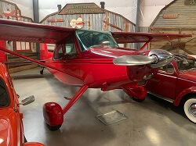Donation: David Clark
Engine: Continental E-165, 165 HP
A post-war design, the Sedan was a convertible workhorse airplane that could serve nearly any purpose from bush flying to family travel. It was roomy, had a large door and flew well both loaded and empty, setting it apart from the crowd. Joseph Juptner remarked, “...she didn’t have a mean rivet in her whole frame.” The appearance is distinctive and it continues to turn heads today as it did when it was new. Some of the stock Sedan parts were borrowed from the Cadillac automobile including the dome light, roll down window handles, and ash tray to try and further show off the classiness of the airplane. Sadly, it went into production shortly before the airplane market fizzled so sales were weak.
1948 Piper PA-14 "Family Cruiser"
Donation: GM "Sam" Grotte
Engine: Lycoming O-320, 150 HP
In essence, a widened PA-12 Super Cruiser with the addition of flaps, Piper's PA-14 Family Cruiser was the company’s response to the demand for four-seat airplanes. The accommodations were, to be charitable, “cozy.” Unfortunately, the airplane was introduced shortly before Piper’s financial straits drove it into receivership and only 238 were built. Today many of the those still flying are Alaska where they have been much-modified and are considered desirable workhorses of backcountry flying. Reflecting its backcountry role, the WAAAM PA-14 is on floats. This aircraft was refurbished in our restoration shop during Winter 2018 and went on display in March 2019.
1948 Piper PA-15 "Vagabond"
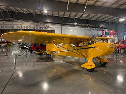Donation: North Cascades Vintage Aircraft Museum
Engine: Lycoming O-145, 65 HP
The Vagabond was Piper’s first post-war design. Its structure was similar to the Cub and it was built on much of the same production tooling. The fuselage changed from the tandem seating of the Cub to side-by-side seating. The cost savings realized by using existing material and design probably saved Piper from bankruptcy at that time. The PA-17 model was nearly the same but added dual controls for training and bungee cord suspension vs. the single controls and solid gear of the PA-15.
1949 Piper PA-16 "Clipper"
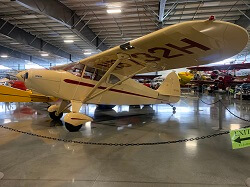Donation: North Cascades Vintage Aircraft Museum
Engine: Lycoming O-235, 115 HP
The Clipper was substantially a Vagabond with a second fuel tank, a larger engine and the fuselage lengthened to add two seats. The Clipper’s cost was 40% below the average for a four-seat airplane. Pan American Airways disputed the name, though, as “Clipper” denoted its luxury airliners. After one year’s production, upgrades to the Clipper begat the Pacer.
Additional Specifications:
Cruise: 117 MPH
Top Speed: 125 MPH
Empty Weight: 850 lbs
Gross Weight: 1650 lbs
Wing Span: 29'2"
Length: 20'1"
Height: 6'2"
Service Ceiling: 13,500'
Climb in 1 Minute: 600' at sea level
Approximate Number Built: 736
1951 Aeronca 15AC Sedan
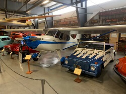Donation: Wayne Greenleaf
Engine: Continental C-145, 145 HP
The name Aeronca is a contraction of its full name, the Aeronautical Corporation of America. Produced from 1948 to 1951 the Aeronca Sedan was the last airplane built by Aeronca. It is a well-behaved four seat airplane with a roomy cabin. Its large wing offers good performance for takeoff and short field operations. In 1949 two pilots in a Sedan departed Fullerton, CA en route to a 42-day endurance flight. In 1958 legendary Alaska bush pilot Don Sheldon made a famous canyon rescue by floating his Sedan backward through a rapids several times to effect a rescue.
Additional Specifications:
Cruise: 105 MPH
Top Speed: 120 MPH
Empty Weight: 1150 lbs
Gross Weight: 2050 lbs
Wing Span: 37'6"
Length: 25'3"
Height: 7'
Service Ceiling: 12,400'
Climb in 1 Minute: 650' at sea level
Approximate Number Built: 400-500+
(Data pulled from Joseph Juptner's U.S. Civil Aircraft series.)
1951 Heini Dittmar Condor IV
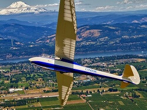Acquired with funds from Jerry Wenger.
Heini Dittmar, an accomplished test pilot and aircraft designer, was the first man to exceed 1,000 km/h which he did as one of WWII’s test pilots of Germany’s rocket powered Messerschmitt ME-163 Komet. The Condor IV was the fourth in the successful Condor series of gliders designed by Dittmar and was his first two-seater. Our Condor IV glider, one of four built by Dittmar himself, was completed in 1951. The following year this aircraft set a world speed record for the 100 km triangle course. The production Condor IV gliders were built by Alexander Schleicher Aircraft Company of Poppenhausen, Germany.
Additional Specifications:
Glide Ratio: 30:1
Empty Weight: 970 lbs
Gross Weight: 1300 lbs
Wing Span: 59'1"
Length: 27'8"
Height: 5'3"
Approximate Number Built: 18+
1953 Piper PA-22 "Tri-Pacer"
1955 Piper PA-18-150 Suber Cub on Floats
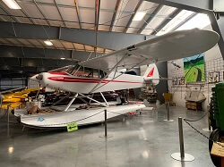Donation: Terry Brandt
Engine: Lycoming O-320, 150 HP
Piper's final offering in the Cub line was one of its most successful with ten thousand Super Cubs built from 1949 to 1994. Even today the Super Cub is a highly desirable airplane, selling on the used market for a significant premium over other comparable airplanes. It was intended from the outset to be a working airplane, serving as a trainer, power line and pipeline patrol, banner and glider towing, military liaison and bush flying. It’s the airplane of choice for many bush pilots in Alaska.
This airplane is currently out in our restoration shop for refurbishment.
1959 Callair A-6
Donation: Serendipity Soaring LLC
Engine: Continental O-470, 260 HP
The Call Aircraft Company was founded in 1939 by Ruell Call, a Wyoming rancher, to build a touring airplane. Manufacturing was interrupted by WWII and the company served as a repair facility during wartime. Postwar competition in general aviation was fierce and the company struggled. In 1954 Callair introduced the first purpose-built agricultural airplane of which the A-6 is an improved version. The most eye catching feature of the airplane is the cockpit offset from the centerline to make room for the chemical hopper. Callairs were popular as towplanes for gliders.
1961 Piper PA-22-108 "Colt"
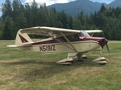Donation: North Cascades Vintage Aircraft Museum
Engine: Lycoming O-235, 108 HP
In the early sixties Piper’s Cherokee production wasn’t keeping up with the demand for training aircraft. Piper needed a two-seat trainer so they adapted the four-seat Tri-Pacer by removing two seats, the rear door, one fuel tank, the rear windows and eliminating flaps. While not as popular as its four-seat sibling it was successful with nearly 2,000 sold. The end of production in 1963 marked the end of the short wing Pipers.
1963 Oberlerchner MG-23 SL Glider
Donation: Dorothy Klemmedson
Designed by Erwin Musger the MG-23 SL is a single seat sport glider with a 53’ 10” wing span. Its maximum glide ratio is 33:1 and maximum speed is 140 MPH in smooth air. The prototype flew in 1955 but production was delayed, beginning in 1962 and ending in 1966.
Additional Specifications:
Glide Ratio: 33:1
Empty Weight: 529 lbs
Gross Weight: 794 lbs
Wing Span: 53'10"
Length: 23'4"
Height: 4'11"
Approximate Number Built: 94
1964 Schleicher Ka7 Glider
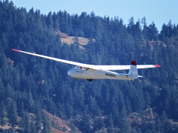Donation: Jerry Wenger
Sporting a distinctive forward swept wing, the Schleicher Ka7 Rhönädler was designed as a two-seat trainer with excellent performance. This allowed pilot training to range from basic flying skills to preparation for high performance gliders, all in the same aircraft. In competition it twice improved German distance records and ten years after its introduction it set a new German goal flight record. (A goal flight is one with a destination or set of turn points that are selected before the flight.)
Additional Specifications:
Glide Ration: 25:1
Empty Weight: 628 lbs
Gross Weight: 1058 lbs
Wing Span: 52'6"
Length: 26'9"
Height: 5'7"
Approximate Number Built: 550
1967 Schweizer SGS 2-33
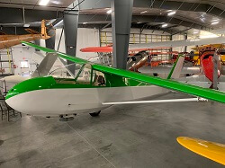Year: 1967
Donation: Jerry Wenger
The 2-33 was built by the Schweizer Aircraft Corporation in Elmira, New York. Its construction is metal tube framework with fabric covering on the fuselage and tail and a metal-covered wing. First flown in 1965, this model style is an intermediate trainer that was a mainstay of glider flight for more than twenty years. The U.S. Air Force Academy flew 13 of them until 2002. Even today it remains a popular sport and training glider.
Additional Specifications:
Glide Ration: 22:1
Empty Weight: 600 lbs
Gross Weight: 1041 lbs
Wing Span: 51'
Length: 25'9"
Height: 9'3.5"
Approximate Number Built (includes 33A): 579
1968 Glasflügel H-301B Libelle Glider
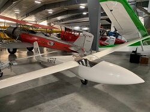Year: 1968
Donation: Christopher and Woodson Woods
The Glasflügel Libelle is an all glass-fiber single-seat Open class glider. In 1964 the H-301 was the first all glass-fiber glider certified in Germany and in the U.S.A. and the company was the first to produce glass-fiber gliders in quantity. The glider has a retractable wheel and flaps that change the wing’s camber (shape), features that moved it from the 15-meter class to the Open class for competition. Other features that made it a standout include a tongue-fork wing attachment (soon adopted by other manufacturers), spring-seated airbrakes and a compartment built into the leading edge for water ballast that is used to increase wing-loading for higher speeds on cross country flights. Two different canopies were available, one with a vent for normal flight and one for racing.
Additional Specifications:
Glide Ratio: 39:1
Empty Weight: 397 lbs
Gross Weight: 661 lbs
Wing Span: 49'3"
Length: 20'4"
Height: 2'8" (wheel up)
Approximate Number Built: 111
1969 Schweizer SGS 2-33A
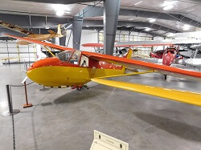Year: 1969
Donation: Jerry Wenger
The 2-33 was built by the Schweizer Aircraft Corporation in Elmira, New York. Its construction is metal tube framework with fabric covering on the fuselage and tail and a metal-covered wing. First flown in 1965, this model style is an intermediate trainer that was a mainstay of glider flight for more than twenty years. The U.S. Air Force Academy flew 13 of them until 2002. Even today it remains a popular sport and training glider. The 2-33A has a counterbalanced rudder and looks nearly identical to WAAAM's earlier 2-33.
Additional Specifications:
Glide Ration: 23:1
Empty Weight: 600 lbs
Gross Weight: 1040 lbs
Wing Span: 51'
Length: 25'9"
Height: 9'3.5"
Approximate Number Built (includes 33 version): 579